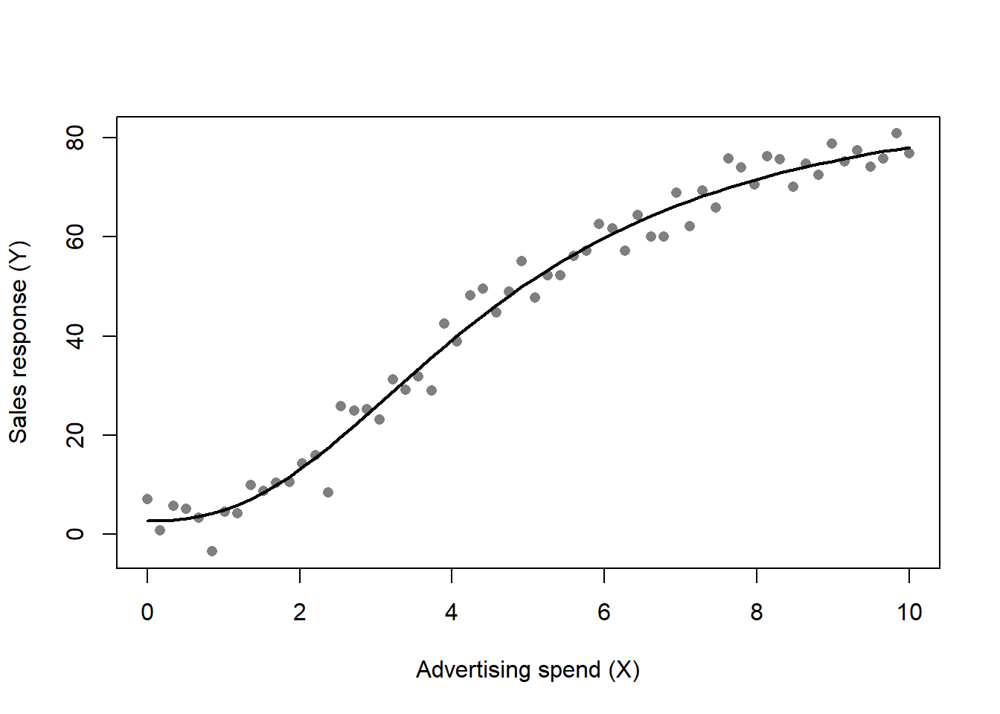
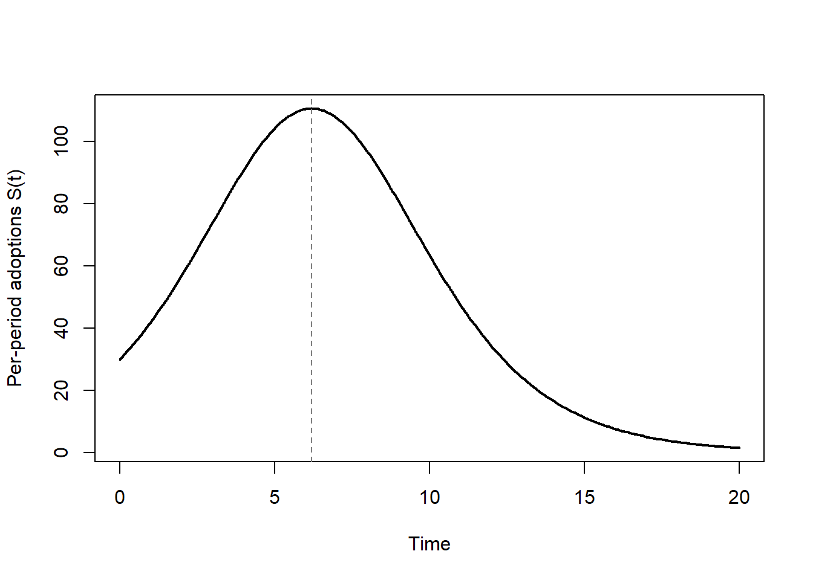
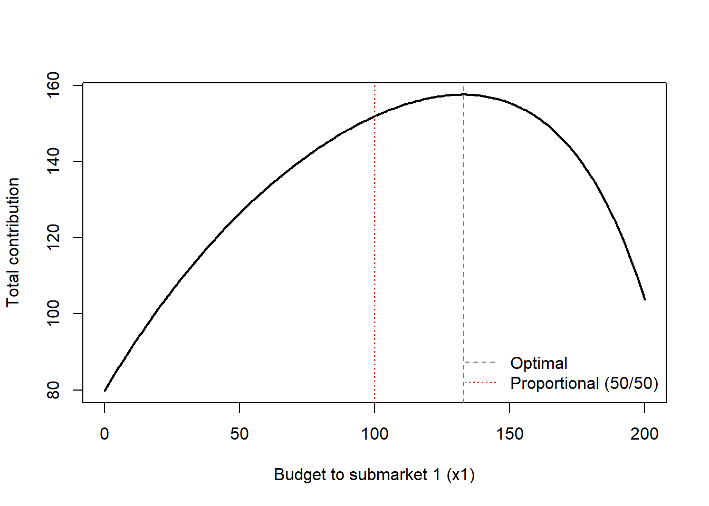

flowchart TD
A[Get a good idea<br/>literature or industry] --> B{Feasibility:<br/>interesting? story?<br/>audience? opp. cost?}
B -->|yes| C[Resist the literature<br/>re-derive independently]
C --> D[Build simplest model<br/>1 period, 2 products,<br/>linear utility]
D --> E[Generalize:<br/>add complexity<br/>one assumption at a time]
E --> F[Search the literature:<br/>why didn't I do<br/>what they did?]
F --> G[Seminar:<br/>stress-test assumptions]
G --> H[Write the paper]
35 Analytical Models
Marketing science advances along two complementary tracks. Analytical models reason about markets through pure mathematics: a researcher posits an environment of consumers and firms, assumes that each agent optimizes, and derives the behavior that must follow in equilibrium. Empirical models instead let data speak, estimating relationships and testing the predictions that theory hands them. This chapter is about the first track—how to build a stylized mathematical world, solve it, and extract substantive claims about pricing, positioning, advertising, channels, contracts, and the diffusion of new products—while keeping one eye on the empirical counterparts that make the theory testable.
A model, in the working definition that organizes the field, is a representation of the most important elements of a perceived real-world system. The art lies in the word important: a model that retains everything is the territory, not the map, and a model that retains too little predicts nothing. The discipline of marketing modeling is therefore the discipline of principled omission. The reward for doing it well is decision-relevant insight. Little (1976) frames the goal as a decision calculus—“a model-based set of procedures for processing data and judgments to assist a manager in his decision making”—and argues that such a system earns managerial adoption only when it is simple, robust, easy to control, adaptive, as complete as possible, and easy to communicate with. Those six criteria recur throughout this chapter as a standard against which competing formulations are judged: a more elaborate model that a manager cannot interrogate is often a worse model.
By the end of the chapter the reader should be able to classify a marketing problem by the type of model it calls for, set up the corresponding game or optimization, solve for equilibrium or the optimum, and state the assumptions whose failure would overturn the result. We proceed from the philosophy and craft of model building, through the workhorse spatial and oligopoly models, to the major application domains—market response, channels, advertising, product quality under asymmetric information, bargaining, search-theoretic pricing, promotions, salesforce compensation, and diffusion—closing with the optimization models that turn behavioral theory into resource-allocation decisions.
35.1 A Taxonomy of Marketing Models
Marketing models improve decision-making in three broad families, and it is worth fixing the distinctions before building anything, because the family determines what counts as a valid test of the model.
Econometric models describe, predict, and simulate. A descriptive model summarizes how a market behaves; a predictive model forecasts an outcome such as sales; a simulation model traces how the system responds to a counterfactual intervention. Leeflang et al. (2000) organizes the empirical tradition along exactly these lines. Predictive models include sales models built on time-series data, trial-rate models built on exponential growth, and the new-product growth model of Bass (1969). Descriptive models include purchase-incidence and purchase-timing models built on the Poisson process, brand-choice models built on Markov or learning processes, and pricing models for oligopolistic markets in the tradition of Howard and Morgenroth (1968). Normative models, by contrast, prescribe: they maximize an objective such as profit over price, advertising, and quality, the program studied by Dorfman and Steiner (1976) and extended by Roberts, Ferber, and Verdoorn (1964) and Lambin (1970). The decision-calculus program of Little (1970) and the multinomial logit choice model brought to scanner data by Guadagni and Little (1983) are landmarks in turning normative structure into operational tools.
Optimization models take a market-response function—how outputs such as sales, share, profit, and awareness respond to inputs such as price, advertising, and selling effort—together with cost functions and constraints, and maximize an objective. The candidate decisions that such models automate are familiar from practice: promotion and pricing programs, media allocation, distribution, product assortment, and direct-mail solicitation. Quasi- and field-experimental analyses and conjoint and choice experiments complete the toolkit, supplying the causal variation that observational data often lack.
Cutting across these families is the distinction between decision-support modeling and theoretical modeling. The former describes how things work; the latter prescribes how things should work. Theoretical, game-theoretic models in the tradition of K. S. Moorthy (1993) are best understood as logical experimentation: the modeler specifies an environment through assumptions, deduces consequences, and learns which assumptions drive which conclusions. K. S. Moorthy (1993) separates two kinds of assumption that play very different roles. Mathematical assumptions are made for tractability and carry no empirical content; substantive assumptions encode claims about the world and are the proper object of empirical testing. A classic illustration is the design of a salesforce compensation package combining salary and commission, which K. S. Moorthy (1993) reads as a trade-off between insuring the salesperson against income risk and motivating effort—a substantive tension we return to in Section 35.16. The internal and external validity of such a model are questions about its boundary conditions, and Friedman’s dictum looms over the enterprise: theories are tested by their predictions, not by the realism of their assumptions.
Because so much of analytical marketing is game theory, it helps to organize the solution concepts by two attributes of the game: whether moves are static (simultaneous) or dynamic (sequential), and whether information is complete or incomplete. The four cells in Table 35.1 name the equilibrium concept that applies in each.
| Information | Static (simultaneous) | Dynamic (sequential) |
|---|---|---|
| Complete | Nash equilibrium | Subgame-perfect equilibrium |
| Incomplete | Bayesian Nash equilibrium (auctions) | Perfect Bayesian equilibrium (signaling) |
K. S. Moorthy (1985) supplies the vocabulary that the rest of the chapter assumes. Rationality is the maximization of subjective expected utility; intelligence is the recognition that rival firms are themselves rational and will reason likewise. The rules of the game comprise the number of firms, the feasible set of actions for each, the utilities attached to every combination of moves, the sequence of moves, and the information structure—who knows what, and when. Incomplete information arises from unknown motivations, unknown abilities, or simply differing knowledge of the world. A pure strategy is a complete plan of action; a mixed strategy is a probability distribution over pure strategies; the strategic-form representation lists each firm’s strategy set together with its payoffs. An equilibrium is a profile of strategies in which no firm would unilaterally change its own—crucially, an equilibrium is a fixed point, not the outcome of a dynamic adjustment process, a subtlety that separates equilibrium analysis from the learning dynamics it is sometimes mistaken for.
These equilibrium ideas have a canonical set of applications that recur below: oligopolistic competition in the quantity-setting tradition of Cournot and the price-setting tradition of Bertrand; perfect competition as a limiting case; spatial product competition following Hotelling; entry, with its first-mover advantages and deterrence strategies; and distribution channels. Refinements of the basic Nash concept—subgame perfectness, sequential rationality, and trembling-hand perfectness—discipline which equilibria survive in dynamic and incomplete-information settings, and they matter for substantive questions such as strategic entry deterrence, implicit collusion through price-matching by leader firms, durable-goods pricing by a monopolist, predatory and limit pricing, reputation and product quality, and competitive bidding.
Competition itself does analytical work that bargaining cannot. McAfee and McMillan (1996) shows that competition operates under uncertainty and, in doing so, reveals hidden information: in the independent-private-values benchmark, the selling price in a standard auction equals the second-highest valuation, so the mechanism extracts information that no single negotiation could. Sellers are generally better off revealing what they know, because concealment invites cautious bidding driven by the winner’s curse. Competition is also computationally and strategically cheaper than bargaining—it demands less commitment and less calculation—and it sharpens effort incentives. These themes resurface when we treat auctions, bargaining, and salesforce contests as alternative mechanisms for allocating scarce resources.
35.2 The Craft of Building an Analytical Model
Before deriving any equilibrium it is worth making explicit how an analytical paper is actually constructed, because the logic of discovery differs sharply from the logic of presentation.1 The sequence below distills the practice of theoretical modeling in marketing.
The process begins with a good idea, drawn either from the literature or from industry, and a hard-headed feasibility assessment: is the question interesting, can it be told as a story, who is the target audience, and what is the opportunity cost of pursuing it rather than something else? A counterintuitive piece of advice follows: do not consult the literature too soon. Re-deriving a model that already exists is not wasted effort—it trains the modeler’s judgment, and the act of building independently is what teaches which assumptions matter. The model itself is then built from the simplest possible starting point—one period, two products, a linear consumer utility function—with the formulation written out explicitly, respecting the maxim that everything should be made as simple as possible, but no simpler. Only after the simplest version is solved does one generalize, adding complexity one assumption at a time, so that each new result can be attributed to a specific relaxation. The literature search comes late and serves a sharpening function: finding a related paper invites the productive question of why one did not make the modeling choice the author made. The work concludes with a seminar, where live objection stress-tests the assumptions, and finally with the written paper. Figure 35.1 lays out this workflow as a single sequence, from idea generation through generalization and literature search to the finished paper.
35.3 Spatial Competition: The Hotelling Model
Spatial models are the backbone of analytical marketing because they give product differentiation a geometry. Consumers are arrayed along a line, each firm occupies a location, and the distance between a consumer’s ideal point and a firm’s offering becomes a disutility—literally a transportation cost, figuratively a measure of how poorly the product matches the consumer’s taste. The framework is flexible enough to represent positioning, pricing, advertising, and entry within one consistent geometry, which is why it reappears throughout the chapter.
Hotelling (1929) launched this tradition with a study of stability in competition, arguing—against Bertrand’s critique of Cournot, which Edgeworth had elaborated—that duopoly is inherently unstable, the instability traceable to Cournot’s assumption of absolutely identical products. Consider two sellers, A and B, on a street of length \(l\), located at distances \(a\) and \(b\) from the two ends, with a constant transportation cost \(c\) per unit distance. A consumer located between the firms is indifferent between them when total cost—price plus travel—is equalized. Writing \(x\) and \(y\) for the lengths of the market segments captured to the inside of A and B respectively, the indifferent consumer satisfies
\[ p_1 + cx = p_2 + cy, \tag{35.1}\]
while the segments partition the street,
\[ a + x + y + b = l . \tag{35.2}\]
Solving Equation 35.1 and Equation 35.2 jointly gives the marginal boundaries
\[ x = \tfrac{1}{2}\!\left(l - a - b + \frac{p_2 - p_1}{c}\right), \qquad y = \tfrac{1}{2}\!\left(l - a - b + \frac{p_1 - p_2}{c}\right). \tag{35.3}\]
Each firm’s demand is the length of the street it captures, \(q_1 = a + x\) and \(q_2 = b + y\), so with zero marginal cost the profit functions are
\[ \begin{aligned} \pi_1 = p_1 q_1 &= \tfrac{1}{2}(l + a - b)\,p_1 - \frac{p_1^2}{2c} + \frac{p_1 p_2}{2c},\\ \pi_2 = p_2 q_2 &= \tfrac{1}{2}(l - a + b)\,p_2 - \frac{p_2^2}{2c} + \frac{p_1 p_2}{2c}. \end{aligned} \tag{35.4}\]
The price equilibrium follows from the first-order conditions \(\partial \pi_1/\partial p_1 = 0\) and \(\partial \pi_2/\partial p_2 = 0\), namely
\[ \tfrac{1}{2}(l + a - b) - \frac{p_1}{c} + \frac{p_2}{2c} = 0, \qquad \tfrac{1}{2}(l - a + b) - \frac{p_2}{c} + \frac{p_1}{2c} = 0, \tag{35.5}\]
which solve to the equilibrium prices and quantities
\[ p_1 = c\!\left(l + \frac{a-b}{3}\right),\quad p_2 = c\!\left(l - \frac{a-b}{3}\right),\qquad q_1 = \tfrac{1}{2}\!\left(l + \frac{a-b}{3}\right),\quad q_2 = \tfrac{1}{2}\!\left(l - \frac{a-b}{3}\right), \tag{35.6}\]
with the second-order conditions satisfied. The substantive payoff is a tension between private and social incentives: in the choice of locations, central planning (“socialism”) outperforms decentralized competition (“capitalism”), because firms have a private incentive to cluster that is socially wasteful.
Hotelling (1929) conjectured a Principle of Minimum Differentiation—that firms locate back-to-back at the market center. d’Aspremont, Gabszewicz, and Thisse (1979) demonstrated that the principle is invalid once the price subgame is treated rigorously, because the linear-transport-cost demand is discontinuous: when prices diverge enough that one firm could undercut and seize the entire market, the profit function jumps. Writing the discontinuity explicitly,
\[ \pi_1(p_1, p_2) = \begin{cases} a p_1 + \tfrac{1}{2}(l-a-b)p_1 + \dfrac{p_1 p_2}{2c} - \dfrac{p_1^2}{2c} & \text{if } |p_1 - p_2| \le c(l-a-b),\\[2mm] l\,p_1 & \text{if } p_1 < p_2 - c(l-a-b),\\[1mm] 0 & \text{if } p_1 > p_2 + c(l-a-b), \end{cases} \tag{35.7}\]
and symmetrically
\[ \pi_2(p_1, p_2) = \begin{cases} b p_2 + \tfrac{1}{2}(l-a-b)p_2 + \dfrac{p_1 p_2}{2c} - \dfrac{p_2^2}{2c} & \text{if } |p_1 - p_2| \le c(l-a-b),\\[2mm] l\,p_2 & \text{if } p_2 < p_1 - c(l-a-b),\\[1mm] 0 & \text{if } p_2 > p_1 + c(l-a-b). \end{cases} \tag{35.8}\]
The discontinuity destroys existence of a pure-strategy price equilibrium when firms are close together, so the minimum-differentiation result cannot hold; d’Aspremont, Gabszewicz, and Thisse (1979) restore existence by replacing linear with quadratic transport costs, which yields maximal differentiation instead. The methodological lesson is general: the shape of the transport-cost function is a substantive assumption with first-order consequences, not an innocuous mathematical convenience. KIM and SERFES (2006) later embeds a preference for variety in a location model, foreshadowing the multi-purchase extensions discussed next.
35.4 Positioning Models
Building on the Hotelling skeleton, a stream of work asks where firms locate when the auxiliary assumptions are relaxed. Tabuchi and Thisse (1995) relaxes the assumption that consumers are uniformly distributed. With consumers spread over \([0,1]\) according to a cumulative distribution \(F(x)\) with \(F(1)=1\), two densities are compared: the traditional uniform \(f(x)=1\) and a triangular \(f(x) = 2 - 2|2x - 1|\) that concentrates consumers toward the center. Transportation cost is quadratic in distance. The marginal consumer located between firms at \(x_1 < x_2\) with prices \(p_1, p_2\) is
\[ \bar{x} = \frac{p_2 - p_1 + x_2^2 - x_1^2}{2(x_2 - x_1)}, \tag{35.9}\]
so that profits are \(\Pi_1 = p_1 F(\bar{x})\) and \(\Pi_2 = p_2[1 - F(\bar{x})]\) when \(x_1 < x_2\), with the roles reversed for \(x_1 > x_2\) and a Bertrand subgame when \(x_1 = x_2\). Tabuchi and Thisse (1995) establishes that when firms choose locations simultaneously and then prices simultaneously, and the density is log-concave, a unique Nash price equilibrium exists. Under the uniform density firms locate as far apart as possible—consistent with shopping centers sited away from city centers, though at the cost of forcing consumers to buy products far from their ideal. Under the triangular density no symmetric location equilibrium exists, but two asymmetric equilibria do, with lower profits for both firms. When locations are instead chosen sequentially and prices simultaneously, the first entrant locates at the market center under both densities—a first-mover result that contrasts with the maximal- differentiation outcome of simultaneous choice.
Sajeesh and Raju (2010) turns to variety-seeking, modeling satiation as a relative reduction in willingness to pay for the previously purchased brand—a form of negative state dependence. The received wisdom held that variety-seeking consumers let firms charge higher prices and earn higher profits; Sajeesh and Raju (2010) shows the opposite, that average prices and profits are lower, because firms cut second-period prices to deter switching. The timing is a three-stage game: firms choose locations simultaneously in period 0, prices simultaneously in period 1, and prices again simultaneously in period 2.
Several papers vary the order and structure of competition. K. S. Moorthy (1988) has two identical firms choose product quality first and then price, a two-stage structure we formalize under vertical differentiation in Section 35.11. Tyagi (2000) extends Hotelling (1929), Tyagi (1999b), and Tabuchi and Thisse (1995) to firms that enter sequentially with different cost structures, and—against the usual presumption that moving first is advantageous—demonstrates a second-mover advantage. KIM and SERFES (2006) allows consumers to make multiple purchases, so that some are loyal to a single brand while others consume more than one product, enriching the demand side beyond unit demand. Shreay, Chouinard, and McCluskey (2015) shows that quantity surcharges across different package sizes of the same product—an apparent violation of quantity discounting—can be rationalized by consumer preferences when the sizes are imperfect substitutes, i.e., differentiated products.
35.5 Oligopoly: Market Structure and Frameworks
The spatial models above derive demand from geometry. The oligopoly tradition begins instead from an aggregate demand function and asks how firms compete given it. Three canonical structures organize the field: Bertrand competition, in which firms set prices; Cournot competition, in which firms set quantities; and Stackelberg competition, the leader–follower structure in which one firm commits before the other. Because everything flows from the demand function, it matters where that function comes from; Richard and Martin (1980) derives aggregate demand from primitives rather than positing it, supplying the microfoundation that the reduced-form models take as given. As noted above, K. S. Moorthy (1988) studies how two firms compete on product quality and price under both simultaneous and sequential timing, bridging the spatial and oligopoly traditions.
35.5.1 Cournot Competition: Simultaneous Quantity Setting
Let two firms produce a homogeneous good with constant marginal costs \(c_1, c_2\), so total cost is \(TC_i = c_i q_i\). Inverse demand is linear, \(P(Q) = a - bQ\) with \(Q = q_1 + q_2\). Each firm chooses its quantity to maximize profit,
\[ \pi_1 = [a - b(q_1 + q_2)]q_1 - c_1 q_1, \qquad \pi_2 = [a - b(q_1 + q_2)]q_2 - c_2 q_2 . \tag{35.10}\]
The first-order conditions define each firm’s reaction (best-response) function,
\[ \frac{\partial \pi_1}{\partial q_1} = a - 2 b q_1 - b q_2 - c_1 = 0, \qquad \frac{\partial \pi_2}{\partial q_2} = a - 2 b q_2 - b q_1 - c_2 = 0, \tag{35.11}\]
which rearrange to
\[ q_1 = \frac{a - c_1}{2b} - \frac{q_2}{2} \equiv R_1(q_2), \qquad q_2 = \frac{a - c_2}{2b} - \frac{q_1}{2} \equiv R_2(q_1). \tag{35.12}\]
The Cournot–Nash equilibrium is the intersection of the two reaction functions. Substituting \(R_2\) into \(R_1\) gives \(q_1 = \frac{a-c_1}{2b} - \frac{a-c_2}{4b} + \frac{q_1}{4}\), and solving,
\[ q_1^* = \frac{a - 2c_1 + c_2}{3b}, \qquad q_2^* = \frac{a - 2c_2 + c_1}{3b}, \tag{35.13}\]
with total quantity \(Q = \frac{2a - c_1 - c_2}{3b}\) and equilibrium price \(P = a - bQ = \frac{a + c_1 + c_2}{3}\). The structure is transparent: a firm with lower marginal cost produces more, and the equilibrium price is a simple average of the demand intercept and the two cost levels.
35.5.2 Stackelberg Competition: Sequential Quantity Setting
Now suppose Firm 1 (the leader) chooses quantity in stage 1, and Firm 2 (the follower) responds in stage 2, with common marginal cost \(c_1 = c_2 = c\). Solving by backward induction, the follower’s stage-2 best response is \(R_2(q_1) = \frac{a-c}{2b} - \frac{q_1}{2}\). The leader anticipates this and chooses \(q_1\) to maximize
\[ \pi_1 = \left[a - b\!\left(q_1 + \frac{a-c}{2b} - \frac{q_1}{2}\right)\right] q_1 - c q_1 , \tag{35.14}\]
whose first-order condition \(\frac{a+c}{2} - b q_1 - c = 0\) yields the Stackelberg equilibrium
\[ q_1^* = \frac{a - c}{2b}, \qquad q_2^* = \frac{a - c}{4b}. \tag{35.15}\]
Comparing with the symmetric Cournot outcome \(q_1 = q_2 = \frac{a-c}{3b}\), the leader produces more and the follower less than under simultaneous competition. The leader’s ability to commit first—to move down the follower’s reaction function—is worth real profit, which is the analytical content of “first-mover advantage” in quantity competition. Table 35.2 summarizes the contrast.
| Quantity | Cournot (simultaneous) | Stackelberg (sequential) |
|---|---|---|
| Leader / Firm 1 | \(\dfrac{a-c}{3b}\) | \(\dfrac{a-c}{2b}\) |
| Follower / Firm 2 | \(\dfrac{a-c}{3b}\) | \(\dfrac{a-c}{4b}\) |
| Total \(Q\) | \(\dfrac{2(a-c)}{3b}\) | \(\dfrac{3(a-c)}{4b}\) |
35.5.3 Differentiation and the Value of Independence
When products are differentiated rather than homogeneous, a firm’s profit depends on how substitutable its product is for its rival’s. Let \(\beta\) index substitutability (higher \(\beta\) meaning closer substitutes) and let \(d\) index a second structural parameter such as a demand or cost asymmetry, with \(\bar d\) a threshold. For a “weak” firm \(W\), the comparative static
\[ \frac{d \pi_W^*}{d \beta} < 0 \quad \text{for all } d < \bar{d} \tag{35.16}\]
shows that profit falls as products become closer substitutes, so the weak firm prefers a lower \(\beta\)—it wants a more independent, more differentiated product. For a “strong” firm \(S\), the relationship is non-monotone in \(d\):
\[ \frac{d \pi_S^*}{d \beta} < 0 \quad \text{over a range } d < \bar{d}, \tag{35.17}\]
so that the strong firm’s profit rises as \(\beta\) falls when \(d\) is small, but rises as \(\beta\) increases when \(d\) is large. The substantive reading is that strong firms can benefit from less differentiation (closer substitutes) precisely when the structural asymmetry \(d\) is large, because their strength lets them win the more intense competition that proximity creates—whereas weak firms always seek the shelter of differentiation.
35.6 Entry, Retail Structure, and Conspicuous Consumption
The market-structure machinery extends naturally to questions of entry and the vertical organization of retailing. Dixit (1980) reconsiders the Bain–Sylos postulate, under which an incumbent builds enough capacity to render entry unprofitable. The key insight is one of credibility: investment in capacity deters entry only if it is an irreversible commitment, because if the incumbent can costlessly change capacity after entry, the threat is empty and the incumbent cannot in fact deter entry. Commitment, not capacity per se, is what does the strategic work—a theme shared with the Stackelberg leader’s first-mover commitment.
Tyagi (1999a) decomposes the effect of an additional retailer on prices. The entry of the \((n+1)\)-st retailer sets two forces against each other: a competition effect that lowers retail prices, and an input-cost effect on the wholesale price. Manufacturers, gaining bargaining power as the number of retailers grows, may raise the wholesale price; because each retailer’s quantity choice depends on the wholesale price, this can raise downstream prices, partially or wholly offsetting the competition effect. More retailers therefore need not mean lower consumer prices. Jerath, Sajeesh, and Zhang (2016) reaches a related conclusion through a different channel: when an organized retailer enters a market, inefficient unorganized retailers exit, and the surviving unorganized retailers raise their prices, leaving customers worse off.
Conspicuous consumption introduces consumption externalities into the Hotelling framework. Amaldoss and Jain (2005) models two opposing motives in the pricing of conspicuous goods—a desire for uniqueness and a desire for conformism—and shows they push prices in opposite directions: greater desire for uniqueness raises equilibrium prices and profits, whereas greater desire for conformity lowers them. For a snob who dislikes crowding, utility from the two firms is
\[ U_A = V - p_A - \theta t_s - \lambda_s(n_A), \qquad U_B = V - p_B - (1-\theta) t_s - \lambda_s(n_B), \tag{35.18}\]
while for a conformist who values crowding, the externality enters with the opposite sign,
\[ U_A = V - p_A - \theta t_s + \lambda_c(n_A), \qquad U_B = V - p_B - (1-\theta) t_s + \lambda_c(n_B), \tag{35.19}\]
where \(\theta\) is the consumer’s Hotelling position, \(t_s\) the transport cost, \(\lambda_s\) and \(\lambda_c\) the sensitivities to the externality, and \(n_A, n_B\) the numbers buying each brand. The novel solution concept is rational-expectations equilibrium: the number of buyers a consumer expects must equal the number that in fact materializes. Let \(\theta_s\) mark the marginal snob and \(\theta_c\) the marginal conformist, with \(\beta\) the fraction of snobs in the market. Setting \(U_A = U_B\) for each segment pins down \(\theta_s\) and \(\theta_c\), and the expectations consistency conditions are
\[ \beta \theta_s + (1-\beta)\theta_c = n_A, \qquad \beta(1-\theta_s) + (1-\beta)(1-\theta_c) = n_B, \tag{35.20}\]
where \(\beta \theta_s\) is the mass of snobs buying from A, \((1-\beta)\theta_c\) the mass of conformists buying from A, and the remaining terms the masses buying from B. The equilibrium expectation is realized: what consumers anticipate is what occurs. This expectation is not an empirical expectation in the statistical sense \(\mathbb{E}[\cdot]\)—it carries no measurement error—but an internal-consistency requirement of the model. The striking comparative static, confirmed both analytically and in laboratory tests, is that a price increase can raise snobs’ desire to buy, because higher price enhances the exclusivity the snob values.
Limited editions and exclusivity round out the theme. Balachander and Stock (2009) shows that adding a limited-edition product has a positive direct effect on profits, through the higher willingness to pay it commands, but a negative strategic effect, through the intensified price competition it triggers between brands. Under vertical (quality) differentiation, the high-quality brand gains from limited editions; under horizontal (taste) differentiation, the negative strategic effect lowers equilibrium profits for both brands, yet both still introduce limited editions because not doing so is dominated—a prisoners’-dilemma structure. Sajeesh, Hada, and Raju (2020) distinguishes functionality-oriented from exclusivity-oriented consumer segments and shows that firms increase value enhancements when functionality-oriented consumers perceive greater product differentiation, but decrease them when exclusivity-oriented consumers do, because exclusivity is undercut by enhancements that everyone can enjoy.
35.7 Market Response Models
Optimization of marketing spend requires a function mapping inputs to outputs. The market-response model is that function. Its inputs are marketing instruments— selling effort, advertising spending, promotional spending—and its outputs are sales, share, profit, and awareness. The modeling problem is to choose a functional form flexible enough to capture the empirical regularities of how output responds to input, yet parsimonious enough to estimate and to optimize. Figure 35.2 sets out this input–output logic: controllable marketing actions enter the response function, which maps them to the observed market outcomes.
For the promotional instrument in particular, a response coefficient conceals a decomposition worth making explicit. Blattberg, Briesch, and Fox (1995) separate the sales spike into brand switching, purchase acceleration, and category expansion, and show that the mix differs sharply across categories — which means two promotions with identical estimated lift can have opposite implications for incremental profit. The assortment instrument carries a comparable subtlety: more variety is not monotonically better, and Gourville and Soman (2005) identify the conditions under which it reverses.
flowchart LR
subgraph Inputs[Marketing actions: inputs]
A1[Selling effort]
A2[Advertising spend]
A3[Promotional spend]
end
R[(Response<br/>function)]
subgraph Outputs[Observed market outcomes]
O1[Sales]
O2[Share]
O3[Profit]
O4[Awareness]
end
A1 --> R
A2 --> R
A3 --> R
R --> O1
R --> O2
R --> O3
R --> O4
A good dynamic response model captures several stylized facts. Sales response is dynamic, with a growth rate and a decay rate that differ; the steady-state response can be concave or S-shaped, with positive sales even at zero advertising; competitive effects matter; advertising effectiveness itself shifts with media, copy, and other factors; and sales continue to rise or fall even while advertising is held constant. Saunders codified a finer list of phenomena any response form might need to reproduce: zero output at zero input; a linear input–output relationship; decreasing returns to scale; an output ceiling (saturation); increasing returns to scale; an S-shaped pattern in which returns first increase then decrease; a threshold below which input produces no output; and a supersaturation point beyond which additional input reduces output.
35.7.1 A Catalogue of Aggregate Response Forms
No single functional form reproduces every phenomenon, so the modeler chooses among a catalogue, each member of which buys some flexibility at the cost of some. The linear model \(Y = a + bX\) is the simplest but admits only constant returns and so cannot represent concave, convex, or S-shaped response. The power-series / polynomial model \(Y = a + bX + cX^2 + dX^3 + \cdots\) adds curvature but cannot capture saturation or a threshold. The fractional-root / power model \(Y = a + bX^c\) fixes the exponent \(c\) in advance: \(c = \tfrac12\) gives the square-root model, \(c = -1\) the reciprocal model, \(c = 1\) the linear case, \(c < 1\) decreasing returns, \(c > 1\) increasing returns; when \(a = 0\), \(c\) is the constant elasticity. The semilog model \(Y = a + b\ln X\) suits situations in which a constant percentage increase in effort yields a constant absolute increase in sales. The exponential model \(Y = a e^{bX}\) (for \(X > 0\)) gives increasing, convex returns when \(b > 0\) and decreasing returns with saturation when \(b < 0\). The modified exponential \(Y = a(1 - e^{-bX}) + c\) delivers decreasing returns and saturation, with upper bound \(a + c\) and lower bound \(c\), and is the workhorse for selling-effort response. The logistic \(Y = \frac{a}{a + e^{-(b + cX)}} + d\) produces increasing-then-decreasing returns—an S-shape—with saturation at \(a + d\), and is preferred when both saturation and an S-shape are required; the Gompertz model is a related asymmetric S-curve.
The ADBUDG model of Little (1970),
\[ Y = b + (a - b)\frac{X^c}{d + X^c}, \tag{35.21}\]
is the most versatile of the single-instrument forms: it is S-shaped when \(c > 1\) and concave with a saturation effect when \(0 < c < 1\), with upper bound \(a\) and lower bound \(b\). It passes through the origin or not as specified, handles concavity, saturation, and S-shapes within one expression, and is standard for advertising and selling-effort response. Multiple instruments are accommodated additively, \(Y = a f(X_1) + b g(X_2)\); multiplicatively, \(Y = a X_1^b X_2^c\) with \(b\) and \(c\) as elasticities, or more generally \(Y = a f(X_1)\cdot b g(X_2)\); or in a combined multiplicative-and-additive form \(Y = a f(X_1) + b g(X_2) + c f(X_1) g(X_2)\) that allows interaction between instruments. Finally, the dynamic response model \(Y_t = a_0 + a_1 X_t + \lambda Y_{t-1}\) separates the current effect \(a_1\) from the carry-over effect \(\lambda\), the lagged influence of past sales on present sales.
35.7.2 Dynamic Effects and Adstock
Marketing effects rarely land all at once. The carry-over effect captures how current expenditure influences future sales—advertising adstock is precisely this lagged effect of advertising on sales. Related dynamics include the delayed-response effect (a lag between investment and impact), customer-holdout effects, hysteresis (persistent effects that do not reverse when spend reverses), new-trier and wear-out effects, and stocking effects whereby promotions shift purchase timing. The simplest decay model writes adstock as a geometrically weighted sum of current and lagged spend,
\[ A_t = T_t + \lambda T_{t-1}, \qquad t = 1, 2, \dots, \tag{35.22}\]
where \(A_t\) is adstock at time \(t\), \(T_t\) is advertising spend at \(t\), and \(\lambda\) is the decay (lag-weight) parameter governing how slowly past advertising depreciates.
Response models can be classified along six axes that, together, determine which form is appropriate: the number of marketing variables; whether competition is included; the nature of the input–output relationship (linear versus S-shaped); whether the setting is static or dynamic; whether response is individual or aggregate; and the level of demand analyzed (sales versus market share).
35.7.3 From Category Sales to Brand Share
Brand sales factor into category demand and within-category share, \(Y = M \times V\), where \(Y\) is brand sales, \(V\) is product-class (category) sales, and \(M\) is market share. The dominant family for the share component is the attraction model, in which a brand’s share equals its attractiveness relative to the total attractiveness in the category,
\[ M_i = \frac{A_i}{A_1 + \cdots + A_n}, \tag{35.23}\]
with \(A_i\) the attractiveness of brand \(i\). Attraction models guarantee shares that are non-negative and sum to one—a logical-consistency property that ad hoc share regressions lack.
At the individual level, the multinomial logit model gives the probability that consumer \(i\) chooses brand \(l\) as
\[ P_{il} = \frac{e^{A_{il}}}{\sum_j e^{A_{ij}}}, \tag{35.24}\]
where \(A_{ij} = \sum_k w_k b_{ijk}\) is the attractiveness of product \(j\) to consumer \(i\), \(b_{ijk}\) is consumer \(i\)’s evaluation of product \(j\) on attribute \(k\), the sum running over the products \(i\) considers, and \(w_k\) is the importance weight on attribute \(k\). The logit is the individual-level microfoundation of the aggregate attraction model and the bridge to the choice-modeling tradition of Guadagni and Little (1983); we treat its estimation in the conjoint and choice-modeling discussion below.
35.7.4 Worked Illustration: Estimating an ADBUDG Response Curve
To make the response-modeling apparatus concrete, the following code simulates an advertising response that is genuinely S-shaped, then recovers the ADBUDG parameters by nonlinear least squares and plots the fit, shown in Figure 35.3. The example is seeded for reproducibility.
Code
set.seed(2026)
# True ADBUDG parameters: Y = b + (a - b) * X^c / (d + X^c)
a_true <- 100 # upper bound (saturation)
b_true <- 5 # lower bound (sales at zero advertising)
c_true <- 2.2 # S-shape (c > 1)
d_true <- 40
adbudg <- function(X, a, b, c, d) b + (a - b) * X^c / (d + X^c)
X <- seq(0, 10, length.out = 60)
Y_mean <- adbudg(X, a_true, b_true, c_true, d_true)
Y <- Y_mean + rnorm(length(X), sd = 4)
fit <- nls(
Y ~ b + (a - b) * X^c / (d + X^c),
start = list(a = 90, b = 10, c = 1.5, d = 30)
)
round(coef(fit), 2)
#> a b c d
#> 89.38 2.71 2.42 39.16
plot(X, Y, pch = 16, col = "grey50",
xlab = "Advertising spend (X)", ylab = "Sales response (Y)")
lines(X, predict(fit, newdata = list(X = X)), lwd = 2)
35.8 Conjoint and Augmented Conjoint Analysis
Conjoint analysis estimates how consumers trade off product attributes, and the analytical-modeling literature has extended it from preference measurement toward managerially decisive quantities such as reservation prices. The core of conjoint is treated in Section 41.2; here the concern is the augmentations that connect attribute part-worths to pricing and demand.
Jedidi and Zhang (2002) augments conjoint to estimate consumer reservation prices—the maximum a consumer would pay—rather than mere preference rankings. Starting from a rating-based utility specification
\[ \text{Utility (rating)} = \alpha + \sum_i \beta_i\, \text{Attribute}_i, \tag{35.25}\]
with \(\alpha\) a baseline constant and \(\beta_i\) the part-worth of attribute \(i\), the method maps estimated part-worths into reservation prices for a product in a category. The resulting estimates support decisions about product introduction, the switching effect (consumers drawn from rival brands), the cannibalization effect (consumers drawn from the firm’s own existing products), and the market-expansion effect (new demand created). Netzer and Srinivasan (2011) decomposes conjoint into a sequence of constant-sum paired-comparison questions, which not only estimates attribute importances but also yields standard errors for each importance weight—a statistical refinement that lets the analyst distinguish attributes that genuinely matter from those whose apparent importance is noise.
35.9 Distribution Channels
A channel is a vertical sequence of firms—manufacturers upstream, retailers downstream—each setting prices or quantities to maximize its own profit. The central analytical phenomenon is double marginalization: when an upstream firm marks up over cost and a downstream firm marks up again over the wholesale price, the final price exceeds the integrated-monopoly price and channel profit falls. Whether to integrate, and how to coordinate, are the questions the channel literature answers. The behavioural premise underneath the coordination problem is opportunism, and it is worth knowing how well that premise holds empirically before building on it: Crosno and Dahlstrom (2007) synthesize the evidence and find opportunism real but narrower in its antecedents than transaction-cost theory assumes.
McGuire and Staelin (1983) is the foundational treatment. Two manufacturers produce differentiated, competing products and reach consumers through downstream retailers. Three vertical structures are compared: a decentralized system with two manufacturers and two independent retailers (four players); a vertically integrated system in which each manufacturer owns its retailing (two players); and a mixed system with one integrated manufacturer and one manufacturer–independent-retailer pair (three players). Each retail outlet faces a downward-sloping demand \(q_i = f_i(p_1, p_2)\); under the decentralized system the Nash-equilibrium retail demands become functions of the wholesale prices, \(q_i^* = g_i(w_1, w_2)\). The decision variables are prices, not quantities, and retail demand is assumed linear in prices. Figure 35.4 contrasts the three vertical structures, from the fully decentralized four-player system to the fully integrated two-player one.
flowchart TD
subgraph Dec[Decentralized: 4 players]
M1[Mfr 1] --> R1[Retailer 1]
M2[Mfr 2] --> R2[Retailer 2]
end
subgraph Mix[Mixed: 3 players]
M3[Mfr 1] --> R3[Retailer 1]
M4[Mfr 2 integrated store]
end
subgraph Int[Integrated: 2 players]
M5[Mfr 1 integrated store]
M6[Mfr 2 integrated store]
end
The demand system, after specifying linear retail demands, is
\[ q_1' = \mu S\!\left[1 - \frac{\beta}{1-\theta}\,p_1' + \frac{\beta\theta}{1-\theta}\,p_2'\right], \tag{35.26}\]
\[ q_2' = (1-\mu) S\!\left[1 + \frac{\beta\theta}{1-\theta}\,p_1' - \frac{\beta}{1-\theta}\,p_2'\right], \tag{35.27}\]
with \(0 \le \mu, \theta \le 1\) and \(\beta, S > 0\). Here \(S\) is a scale factor equal to industry demand \(q' \equiv q_1' + q_2'\) at zero prices, \(\mu\) governs the asymmetry in demand between firms, and \(\theta\) measures substitutability—the ratio of the cross-price sensitivity to the own-price sensitivity. At \(\theta = 0\) demands are independent and each firm is a monopolist; as \(\theta \to 1\) the products become maximally substitutable. Feasibility requires that prices cover fixed manufacturing and selling costs \(m'\) and \(s'\) and that demands stay non-negative,
\[ P = \{\, p_1', p_2' \mid p_i' - m' - s' \ge 0,\ i=1,2;\ (1-\theta) - \beta p_1' + \beta\theta p_2' \ge 0,\ (1-\theta) + \beta\theta p_1' - \beta p_2' \ge 0 \,\}, \tag{35.28}\]
which forces \(\beta \le \frac{1}{m' + s'}\); and for industry demand not to rise with either price, \(\frac{\theta}{1+\theta} \le \mu \le \frac{1}{1+\theta}\). After rescaling, industry demand is \(q = 2(1-\theta)(p_1 + p_2)\).
The central result connects channel design to substitutability. When each manufacturer is a monopolist (\(\theta = 0\)), selling through a private (independent) channel is twice as profitable as integrating. When demand is maximally driven by rival retailers’ actions (\(\theta \to 1\)), private dealers are three times as profitable. The break-even degree of substitutability is \(\theta \approx 0.708\). The conclusion is that the optimal distribution system depends on the degree of substitutability at the retail level: decentralization, by softening downstream price competition, can be a strategic asset rather than merely a source of double marginalization.
A complementary literature studies channel coordination devices. Jeuland and Shugan (2008) catalogues four rationales for quantity discounts—cost-based economies of scale, demand-based reasons (large buyers are more price-sensitive), strategic single-sourcing, and channel coordination—and contributes the last, showing how a quantity-discount schedule can align an independent retailer’s incentives with the manufacturer’s. K. S. Moorthy (1987) analyzes second-degree price discrimination as a channel and screening device, while Geylani, Dukes, and Srinivasan (2007) and Jerath and Zhang (2010) extend the channel framework to the strategic interaction between powerful retailers and manufacturers.
35.9.1 Multi-Tier Supply Chains: Where Disruption Risk Sits
The channel models above have two layers, a manufacturer and a retailer. Real supply networks have tiers—an original equipment manufacturer (OEM) buys from tier-1 suppliers, which buy from tier-2 suppliers—and the economically interesting question is how a shock upstream travels down to the firm that sells to consumers. The empirical motivation is the 2011 Great East Japan Earthquake: Carvalho et al. (2021) trace how the disaster propagated through Japanese production networks, and, as Zhu, Chen and Zhou summarize that evidence, firms whose direct suppliers were hit lost about 3.8% in sales growth while firms hit only through their suppliers’ suppliers lost about 2.8%. Damage falls with network distance, but it does not vanish.
Zhu, Chen, and Zhou (2026) (working paper: Zhu, Chen, and Zhou (2023)) ask the design question that this evidence raises: holding the size of the risk fixed, is it worse for the network when the unreliable supplier sits at tier 1 or at tier 2? Their model has an OEM (tier 0), two potential tier-1 suppliers, and two potential tier-2 suppliers. Exactly one supplier, in tier \(k \in \{1, 2\}\), is unreliable: of the \(x\) units it produces it delivers \(xZ\), with \(Z \sim \text{Bernoulli}(\rho)\), so \(\rho\) is reliability and \(1-\rho\) the disruption probability, and production cost is incurred even when the supplier is disrupted. The unreliable supplier is the cheap one (\(c_u < c_r\)), the other tier is reliable at unit cost \(c\), the OEM’s own cost is normalized to zero, and the OEM sells \(x_0\) units at the linear inverse-demand price \((\alpha - \beta x_0)^+\). A fixed cost \(f\) per qualified supplier link makes the network itself a choice. Timing does the work: quantities at the disrupted tier and every tier above it are committed before \(Z\) is realized, and tiers below it react afterwards. The authors solve two versions—a centralized chain in which one owner maximizes total profit, and a decentralized chain in which firms within a tier compete in quantities (Section 35.5.1) and market-clearing prices link the tiers, so that margins stack exactly as in the double-marginalization logic above.
In the centralized chain with \(f = 0\) the answer is unambiguous (Theorem 1 of the working paper): total profit and output are at least as high when the risk sits at tier 2 as when it sits at tier 1. The intuition is about wasted upstream cost. A tier-1 unit that fails destroys the tier-2 input embodied in it, whereas a failed tier-2 unit is lost before any tier-1 processing has been spent on it. In our toy version of the model this shows up as the effective cost of one delivered unit from the unreliable supplier, \[ \underbrace{c + \frac{c_u}{\rho}}_{\text{risk at tier 2}} \quad\text{versus}\quad \underbrace{\frac{c + c_u}{\rho}}_{\text{risk at tier 1}}, \qquad \text{a gap of } \frac{c\,(1-\rho)}{\rho} \ge 0, \tag{35.29}\] so moving the same disruption one tier closer to the OEM is equivalent to taxing the cheap supplier’s delivered output. The working paper’s corollaries follow from the same wedge: under tier-1 risk the unreliable firm produces less and the reliable one more, and improving reliability pays off most at tier 2 when reliability is low and at tier 1 when it is high.
The chunk below is our toy re-implementation of the centralized, \(f = 0\) comparison, not the authors’ code. It uses the parameter values of the working paper’s Figure 4 (\(\alpha = 8\), \(\beta = 2\), \(c_r = 2\), \(c_u = 1\), \(c = 1/2\); the authors use them for the \(f > 0\) sourcing analysis). For each \(\rho\) the planner chooses the reliable and unreliable quantities \((x_r, x_u)\) before \(Z\); afterwards it sells the smaller of the units that arrived and the unconstrained optimal quantity. Because \(Z\) has two states the expectation is computed exactly, and the two first-stage quantities are optimized with optim (L-BFGS-B, lower bound zero) and checked against a fine grid.
Code
# Our toy re-implementation (not the authors' code): centralized chain, f = 0,
# Bernoulli all-or-nothing disruption of one cheap supplier, Fig-4 parameters.
alpha <- 8; beta <- 2; c_r <- 2; c_u <- 1; c_rel <- 1/2
# Second stage: sell y <= available units; mc = marginal cost still to be paid
# per unit sold (the reliable tier-1 cost when it is decided after Z, else 0).
stage2 <- function(avail, mc) {
y <- pmin(avail, (alpha - mc) / (2 * beta))
list(profit = (alpha - mc - beta * y) * y, y = y)
}
# k = 2: tier-2 quantities (xr, xu) committed before Z; tier 1 processes after Z.
# k = 1: tier-1 quantities and the tier-2 inputs they embody committed before Z.
value <- function(xr, xu, rho, k) {
mc <- if (k == 2) c_rel else 0
sunk <- if (k == 2) c_r * xr + c_u * xu else (c_rel + c_r) * xr + (c_rel + c_u) * xu
good <- stage2(xr + xu, mc); bad <- stage2(xr, mc) # Z = 1 and Z = 0, exactly
list(V = rho * good$profit + (1 - rho) * bad$profit - sunk,
out = rho * good$y + (1 - rho) * bad$y)
}
solve_k <- function(rho, k) {
starts <- list(c(0.5, 0.5), c(1.5, 0.1), c(0.1, 1.5))
fits <- lapply(starts, function(s)
optim(s, function(x) -value(x[1], x[2], rho, k)$V, method = "L-BFGS-B", lower = c(0, 0)))
x <- fits[[which.min(sapply(fits, `[[`, "value"))]]$par
v <- value(x[1], x[2], rho, k)
c(xr = x[1], xu = x[2], V = v$V, out = v$out)
}
grid_V <- function(rho, k, step = 0.005) { # coarse-grid sanity check
g <- expand.grid(xr = seq(0, 2.5, step), xu = seq(0, 2.5, step))
max(value(g$xr, g$xu, rho, k)$V)
}
rhos <- c(0.3, 0.5, 0.6, 0.7, 0.8, 0.9, 0.95)
res <- as.data.frame(t(sapply(rhos, function(r) {
s2 <- solve_k(r, 2); s1 <- solve_k(r, 1)
c(rho = r, xr_t2 = s2[["xr"]], xu_t2 = s2[["xu"]], V_t2 = s2[["V"]], out_t2 = s2[["out"]],
xr_t1 = s1[["xr"]], xu_t1 = s1[["xu"]], V_t1 = s1[["V"]], out_t1 = s1[["out"]])
})))
gap <- max(sapply(rhos, function(r)
c(grid_V(r, 2) - solve_k(r, 2)[["V"]], grid_V(r, 1) - solve_k(r, 1)[["V"]])))
knitr::kable(res, digits = 3,
col.names = c("rho", "x_r (tier-2 risk)", "x_u (tier-2 risk)", "V (tier-2 risk)", "E[output] (tier-2 risk)",
"x_r (tier-1 risk)", "x_u (tier-1 risk)", "V (tier-1 risk)", "E[output] (tier-1 risk)"))| rho | x_r (tier-2 risk) | x_u (tier-2 risk) | V (tier-2 risk) | E[output] (tier-2 risk) | x_r (tier-1 risk) | x_u (tier-1 risk) | V (tier-1 risk) | E[output] (tier-1 risk) |
|---|---|---|---|---|---|---|---|---|
| 0.30 | 1.375 | 0.000 | 3.781 | 1.375 | 1.375 | 0.000 | 3.781 | 1.375 |
| 0.50 | 1.375 | 0.000 | 3.781 | 1.375 | 1.375 | 0.000 | 3.781 | 1.375 |
| 0.60 | 1.250 | 0.208 | 3.802 | 1.375 | 1.375 | 0.000 | 3.781 | 1.375 |
| 0.70 | 1.042 | 0.476 | 3.876 | 1.375 | 1.167 | 0.298 | 3.818 | 1.375 |
| 0.80 | 0.625 | 0.937 | 4.062 | 1.375 | 0.750 | 0.781 | 3.977 | 1.375 |
| 0.90 | 0.000 | 1.597 | 4.592 | 1.438 | 0.000 | 1.583 | 4.513 | 1.425 |
| 0.95 | 0.000 | 1.612 | 4.936 | 1.531 | 0.000 | 1.605 | 4.896 | 1.525 |
Code
cat("\nLargest grid improvement over optim (should be ~0 or negative):", signif(gap, 2), "\n")
#>
#> Largest grid improvement over optim (should be ~0 or negative): -4.4e-16
cat("V(tier-2 risk) >= V(tier-1 risk) at every rho:", all(res$V_t2 >= res$V_t1 - 1e-8), "\n")
#> V(tier-2 risk) >= V(tier-1 risk) at every rho: TRUE
cat("E[output] under tier-2 risk >= under tier-1 risk at every rho:", all(res$out_t2 >= res$out_t1 - 1e-8), "\n")
#> E[output] under tier-2 risk >= under tier-1 risk at every rho: TRUEThree features of the output are worth reading slowly. First, the profit ordering of Theorem 1 holds at every reliability level, but the gap is hump-shaped: at \(\rho \le 0.5\) the cheap supplier is not used at all and the location of the risk is irrelevant (both values are 3.781); the gap widens to 4.062 versus 3.977 at \(\rho = 0.8\); and it narrows again to 4.936 versus 4.896 at \(\rho = 0.95\) as disruption becomes rare. Second, the cheap supplier enters the network earlier when its risk sits at tier 2. The first-order conditions put the entry thresholds at \(\rho > c_u / c_r = 0.5\) under tier-2 risk and at \(\rho > (c + c_u)/(c + c_r) = 0.6\) under tier-1 risk, which is why at \(\rho = 0.6\) the planner already buys 0.208 units from the unreliable tier-2 supplier but none from the unreliable tier-1 supplier. In the dual-sourcing range the reliable supplier also carries more of the load under tier-1 risk (1.167 versus 1.042 units at \(\rho = 0.7\)), the pattern of the working paper’s Corollary 1. Third, the output half of Theorem 1 is a weak inequality, and in this toy it binds: whenever the reliable supplier is used, expected output is \((\alpha - c - c_r)/(2\beta) = 1.375\) under either risk location, and output differs only once the planner single-sources from the cheap supplier (1.438 versus 1.425 at \(\rho = 0.9\)). The grid search never improves on optim (largest improvement \(-4.4 \times 10^{-16}\)).
With positive sourcing costs the same wedge shapes the network. Centralized sourcing moves monotonically from dual to single sourcing as \(f\) rises, and the working paper shows that the planner is less willing to qualify an unreliable node at tier 1 than at tier 2, both because tier-1 risk is costlier and because adding a tier-1 node costs \(2f\): the new supplier needs its own tier-2 source. If a firm is going to add one cheap but unreliable supplier, the centralized logic says to add it at tier 2.
The chapter-level lesson comes from decentralization. Once the tiers are independent firms, double marginalization makes the unreliable supplier less competitive at tier 1, while at tier 2 it overproduces when risk is high, which makes the OEM’s supply more volatile. The OEM’s own profit and output are still lower under tier-1 risk, but total supply-chain profit reverses when disruption risk is high: below a reliability threshold the decentralized chain is better off with the risk at tier 1 (Theorem 3 of the working paper). The reversal disappears when the two firms in the disrupted tier are made homogeneous, so it is the interaction of stacked margins with within-tier asymmetry, not decentralization alone, that flips the sign. The practical corollary is a reshoring priority that depends on governance: an integrated chain should replace its unreliable tier-1 supplier first, whereas a decentralized chain facing high risk may prefer to replace the tier-2 one. Positive sourcing costs can flip even the OEM’s own ranking: in a working-paper example (\(\alpha = 15\), \(\beta = 1\), \(c_{2,r} = 3\), \(c_{2,u} = 2\), \(c = 1\), \(f = 2\), \(\rho = 0.95\)) the OEM single-sources in both cases and earns 1.70 under tier-1 risk but 1.56 under tier-2 risk, because the two identical tier-2 suppliers it faces under tier-1 risk compete harder and lower its input price. In the authors’ decentralized numerical example (\(\alpha = 20\), \(\beta = 1\), all costs 5), supply-chain profit is not even monotone in reliability—flat while the unreliable firm stays out, falling at intermediate \(\rho\) as output becomes more volatile, rising again at high \(\rho\)—which is why an OEM may want to subsidize resilience upstream when risk is high and downstream when it is low.
Sourcing itself becomes non-monotone in the decentralized chain. Under tier-2 risk, when the unreliable tier-2 supplier has a strong cost advantage and is reliable enough, the OEM’s network moves from dual to single sourcing, back to dual, and then to single again as \(f\) rises (Theorem 5), because the OEM is reacting to its tier-1 suppliers’ own sourcing changes rather than to \(f\) directly. An OEM that cannot see who its suppliers buy from cannot anticipate those reversals. The authors use this to argue for supply-chain visibility into sub-tier risk profiles, noting that Toyota lacked tier-2 risk profiles before the 2011 earthquake and citing a 2021 McKinsey survey in which only 21% of senior supply-chain executives reported visibility into their tier-2 supply base. The results extend to several firms per tier—where the centralized chain gains from pooling across more unreliable nodes—and to \(n\) tiers, where a disruption closer to the OEM remains the more damaging one for the centralized chain.
For a student building analytical models, the reusable design is a three-step audit. Start from a centralized benchmark in which the comparative static has a clean economic reason (here, wasted upstream cost). Decentralize and ask which comparative statics survive double marginalization and within-tier competition; the ones that flip are usually the paper. Then remove one asymmetry at a time (here, make the disrupted tier’s firms identical) to locate exactly which primitive drives the reversal. The all-or-nothing Bernoulli yield is what keeps the exercise tractable: with two states, every expectation is a two-term sum, as in the chunk above. (Theorem numbers and numerical examples above are from the October 2024 working-paper version of the article.)
35.10 Advertising Models
Advertising enters consumer utility through three distinct mechanisms, and the choice among them is the central modeling decision. Informative advertising increases overall demand for the brand by informing more consumers of its existence; persuasive advertising shifts demand toward the brand by raising perceived value or loyalty; comparative advertising shifts demand away from a competitor. The spatial Hotelling framework hosts all three cleanly. With \(n\) consumers distributed uniformly along the line—an apt assumption for a mature market with stable demand—base utilities are
\[ U_A = V - p_A - t x, \qquad U_B = V - p_B - t(1-x), \tag{35.30}\]
where \(t\) is the transport cost, reinterpretable here as a return-on-advertising parameter.
Persuasive advertising can be modeled as scaling the value term, \(U_A = A_A V - p_A - tx\), or as raising the reservation price through a concave transformation, \(U_A = \sqrt{Ad_A}\,V - p_A - tx\), or as effectively pulling the firm’s product closer to the consumer’s ideal, \(U_A = V - p_A - \frac{tx}{\sqrt{Ad_A}}\). Comparative advertising instead inflates the rival’s effective distance,
\[ U_A = V - p_A - t\sqrt{Ad_B}\,x, \qquad U_B = V - p_B - t\sqrt{Ad_A}\,(1-x). \tag{35.31}\]
The marginal consumer solves \(U_A = U_B\), giving
\[ x = \frac{1}{t\sqrt{Ad_A} + t\sqrt{Ad_B}}\left(-p_A + p_B + t\sqrt{Ad_A}\right), \tag{35.32}\]
so the (concave) profit functions, net of advertising cost, are
\[ \pi_A = p_A\, x\, n - \phi\, Ad_A, \qquad \pi_B = p_B (1-x)\, n - \phi\, Ad_B, \tag{35.33}\]
with \(\phi\) the per-unit cost of advertising (higher for television than for online, say) and \(t\) interpreted as the return on advertising. Solving the price subgame conditional on advertising levels yields
\[ p_A = \tfrac{2}{3} t\sqrt{Ad_A} + \tfrac{1}{3} t\sqrt{Ad_B}, \qquad p_B = \tfrac{1}{3} t\sqrt{Ad_A} + \tfrac{2}{3} t\sqrt{Ad_B}. \tag{35.34}\]
Prices rise with advertising intensity—invest more, charge more—and each firm’s price rises in its rival’s advertising as well. Optimizing advertising given these prices, the symmetric competitive equilibrium is
\[ Ad_A = Ad_B = \frac{25\, t^2 n^2}{576\, \phi^2}, \qquad p_A = p_B = \frac{5\, t^2 n}{24\, \phi}. \tag{35.35}\]
As the cost of advertising \(\phi\) rises, firms advertise less; as the return \(t\) rises, they benefit more. Notably, equilibrium prices are higher with advertising than without it. Because colluding on prices is illegal and easily detected while colluding on advertising is hard to observe, firms may tacitly coordinate on advertising—pulsing, for instance.2 Setting a common collusive level \(Ad_A = Ad_B = Ad\),
\[ Ad_A = Ad_B = \frac{t^2 n^2}{16\, \phi^2} > \frac{25\, t^2 n^2}{576\, \phi^2}, \tag{35.36}\]
the collusive advertising level exceeds the competitive one, supporting higher prices and leaving consumers worse off. A model combining comparative and persuasive advertising writes the rival’s relative advertising into the transport term,
\[ U_A = V - p_A - tx\,\frac{\sqrt{Ad_B}}{\sqrt{Ad_A}}, \qquad U_B = V - p_B - t(1-x)\,\frac{\sqrt{Ad_A}}{\sqrt{Ad_B}} . \tag{35.37}\]
Informative advertising, by contrast, works by increasing the number \(n\) of potential customers—the natural specification for a new product whose pool of aware consumers is still growing. A subtle assumption throughout is that the advertising decision precedes the pricing decision, which is reasonable because prices are easy to adjust while advertising budgets are committed at the start of a period. Consumption itself responds to availability: consumers consume more when stock is plentiful and less when it is scarce (Ailawadi and Neslin 1998).
The empirical and theoretical literature refines these mechanisms. Villas-Boas (1993) shows that under monopoly, firms do better to pulse—alternating between a minimum and an efficient level of advertising—because the advertising response function is S-shaped; the analysis assumes Markov strategies, so that current actions depend only on payoff-relevant state rather than on history, and establishes that if the loss from letting the consideration level lapse exceeds the efficient advertising expenditure, the unique Markov-perfect equilibrium has both firms always advertising.
Nelson (1974) supplies the information-economics foundation that distinguishes advertising by what consumers can verify. Search qualities are knowable before purchase; experience qualities are not. Misleading advertising risks credibility and imposes the cost of processing non-buying customers, and there is an inverse association between quality produced and utility-adjusted price. Firms that wish to sell more advertise more, and they advertise to their natural audience—those whose tastes a brand best serves are the most likely to see its advertisement. Advertising for experience qualities conveys information indirectly (chiefly by signaling that the seller finds it worthwhile to advertise), whereas advertising for search qualities conveys it directly. Goods are accordingly classified by whether their quality variation is search- or experience-based, into experience durables, experience nondurables, and search goods. Experience goods are advertised more, because advertising raises sales by raising the seller’s reputability; the marginal revenue of advertising is nonetheless higher for search goods, which concentrate in newspapers and magazines while experience goods migrate to other media. For experience goods, word of mouth is a better information source than advertising, and purchase frequency moderates the contrast—low- frequency purchases lean on word of mouth. When laws against deception are moderately enforced, deceptive advertising flourishes: too little enforcement and consumers distrust all claims, too much and deception is deterred, but a moderate regime lets consumers believe and advertisers cheat, which is why experience goods—where enforcement concentrates—carry more deceptive advertising.
Targeting sharpens these effects. Iyer, Soberman, and Villas-Boas (2005) shows that firms advertising to their targeted market—consumers with a strong preference for their product—rather than to competitors’ loyalists endogenously increase market differentiation and raise equilibrium profits. Targeted advertising is more valuable than targeted pricing: targeted advertising raises profits whether or not firms also price-discriminate, whereas targeted pricing merely intensifies competition for comparison shoppers without improving equilibrium profits. The mass of comparison shoppers is \(s = 1 - 2h\), where \(h\) is the size of each firm’s loyal segment and thus also indexes the differentiation between firms; \(A\) denotes the cost of advertising to the entire market and \(r\) the reservation price. Chen et al. (2009) distinguishes combative from constructive advertising and integrates the informative, complementary, and persuasive mechanisms: informative advertising raises awareness, lowers search costs, and increases differentiation; complementary advertising raises utility by signaling social prestige; persuasive advertising lowers price sensitivity, with combative advertising a special case. Consumer response moderates the effect of combative advertising on price competition—it generally decreases competition, but it increases competition when consumer preferences are biased toward advertising firms and disfavored firms cannot advertise and can only respond on price, because an advertising war then spills into a price war.
35.11 Product Differentiation, Quality, and Asymmetric Information
Differentiation comes in two forms with very different welfare logic. Horizontal differentiation means different consumers prefer different products—there is no universal ranking—and is naturally represented by a quadratic taste loss,
\[ U = V - p - t(\theta - a)^2, \tag{35.38}\]
where \(\theta\) is the consumer’s ideal point and \(a\) the product’s location. Vertical differentiation means one product is unambiguously better: all consumers agree on the ranking and differ only in willingness to pay for quality. With qualities \(s_A, s_B\) and a taste parameter \(\theta\),
\[ U_A = \theta s_A - p_A, \qquad U_B = \theta s_B - p_B, \tag{35.39}\]
where \(\theta\) is the consumer’s position on the quality-valuation line and a consumer buys only if utility is non-negative. Taking \(B\) as the higher-quality product, the consumer indifferent between the two is found from \(\theta s_B - p_B = \theta s_A - p_A\), giving the boundary
\[ \bar{\theta} = \frac{p_B - p_A}{s_B - s_A}. \tag{35.40}\]
At equal prices every consumer prefers the higher quality, the characteristics approach treating a product as the bundle of its characteristics.
K. S. Moorthy (1988) closes the vertical-differentiation model with quality-dependent costs. With profits \(\pi_A = (p_A - c s_A^2)\,\text{(share}_A)\) and \(\pi_B = (p_B - c s_B^2)\, \text{(share}_B)\) and the lower boundary \(\bar\theta_2 = p_A / s_A\) marking the consumer indifferent between buying the low-quality product and not buying, the two firms choose qualities first and prices second, and differentiate their qualities to relax price competition. Wauthy (1996) characterizes when the market is covered: with \(\theta\) drawn over a support of width \(b/a\), full coverage requires
\[ 2 \le \frac{b}{a} \le \frac{2 s_2 + s_1}{s_2 - s_1}. \tag{35.41}\]
A modeling subtlety follows: with \(\theta \in [0,1]\) one cannot simultaneously have full market coverage, so the support is often re-specified, for instance
\[ \theta \in \begin{cases} [1,4] & \text{if } b/a = 4,\\ [1,2] & \text{if } b/a = 2, \end{cases} \tag{35.42}\]
to obtain coverage while preserving the vertical structure.
35.11.1 Asymmetric Information: Adverse Selection and Signaling
Quality is often unobservable at the point of purchase, and the consequences are profound. Two failures must be distinguished by their timing relative to the contract. Adverse selection is a pre-contract problem: a relevant characteristic is uncertain before agreement. Moral hazard is a post-contract problem: intentions or actions are hidden after agreement. The adverse-selection problem can unravel a market entirely.
A transparent setup adapts Akerlof’s used-car market. Car quality is \(\theta \in [0,1]\); a seller owning a car of type \(\theta\) values it at \(\theta\), while a buyer’s willingness to pay is \(\tfrac{3}{2}\theta\), so trade is mutually beneficial whenever it occurs. If quality is observable to both sides, any price \(p(\theta) \in [\theta, \tfrac{3}{2} \theta]\) supports trade and both parties gain. If quality is unobservable but symmetrically so—neither side knows \(\theta\), which is uniform—then \(\mathbb{E}[\theta] = \tfrac12\), the seller’s expected value is \(\tfrac12\), the buyer’s is \(\tfrac{3}{2}\cdot \tfrac12 = \tfrac34\), and trade occurs at any \(p \in [\tfrac12, \tfrac34]\). But under genuine asymmetric information—only the seller knows \(\theta\)—a seller offers a car only if \(p \ge \theta\), so the cars on offer have quality in \([0, p]\), and a buyer reasoning correctly computes \(\mathbb{E}[\theta \mid \theta \le p] = \tfrac12 p\), giving buyer utility \(\tfrac34 p < p\). The buyer’s value falls short of the price for every \(p\), and no trade occurs. Asymmetric information, not uncertainty per se, is what destroys the market.
Signaling is the firm-side response, and its analytical content is that a signal works only if it is differentially costly across types. Voluntary quality disclosure is the sharpest case: Guo and Zhao (2009) shows that a firm choosing whether to reveal its quality must reckon with the inference drawn from silence, so partial disclosure is an equilibrium rather than a failure of nerve, and the unraveling result familiar from the theory literature survives only under conditions the marketing setting frequently violates.
Scarcity is a related information problem the analytical literature has been slower to formalize. Hamilton et al. (2018) trace how a scarce resource — money, time, or the product itself — reshapes the whole decision journey rather than merely tightening a constraint at the point of choice, which is a caution against modeling scarcity as a budget parameter. And for the modelling agenda itself, Davenport et al. (2019) map where artificial intelligence is likely to substitute for, rather than complement, the analytical apparatus this chapter develops.
Akerlof (1970) is the founding analysis of this adverse-selection mechanism, framed as the relationship between quality and uncertainty in the automobile market across a \(2\times 2\) of used-versus-new and good-versus-bad. Let \(q\) be the probability of a good car and \(1-q\) the probability of a lemon. Sellers know the probability that a given car is bad; buyers do not, and pay the same price for a lemon as for a good car. The result contrasts with Gresham’s law: bad money drives out good only because the exchange rate is fixed and the two are distinguishable, whereas the buyer cannot tell a good car from a lemon at all. Formally, demand depends on price and average quality, \(Q^d = D(p, \mu)\); supply depends on price, \(S = S(p)\); and average quality is itself a function of price, \(\mu = \mu(p)\), with equilibrium \(S(p) = D(p, \mu(p))\)—and the punchline is that at no price will any trade happen.
Akerlof (1970) makes this concrete with two trader groups. The first has utility \(U_1 = M + \sum_{i=1}^n x_i\) and the second \(U_2 = M + \sum_{i=1}^n \tfrac{3}{2} x_i\), where \(M\) is consumption of other goods, \(x_i\) is the quality of car \(i\), and \(n\) the number of cars, with incomes \(Y_1, Y_2\). Group-1 demand is
\[ D_1 = \begin{cases} Y_1 / p & \text{if } \mu/p > 1,\\ 0 & \text{if } \mu/p < 1, \end{cases} \tag{35.43}\]
and with quality uniform, the supply offered by group 1 is \(S_1 = pN/2\) for \(p \le 2\), carrying average quality \(\mu = p/2\). Group-2 demand is
\[ D_2 = \begin{cases} Y_2 / p & \text{if } \tfrac{3}{2}\mu > p,\\ 0 & \text{if } \tfrac{3}{2}\mu < p, \end{cases} \tag{35.44}\]
with \(S_2 = 0\). Total demand under asymmetric information is therefore
\[ D(p, \mu) = \begin{cases} (Y_1 + Y_2)/p & \text{if } p < \mu,\\ Y_2 / p & \text{if } \mu < p < \tfrac{3}{2}\mu,\\ 0 & \text{if } p > \tfrac{3}{2}\mu, \end{cases} \tag{35.45}\]
and since average quality at price \(p\) is \(\mu = p/2\), the middle and upper branches bind and no trade occurs. Under symmetric information the market revives: with quality uniform on \([0,2]\), supply is \(S(p) = N\) for \(p > 1\) and zero otherwise, demand is \((Y_1+Y_2)/p\) for \(p<1\), \(Y_2/p\) for \(1<p<\tfrac32\), and zero above, and equilibrium price is
\[ p = \begin{cases} 1 & \text{if } Y_2 < N,\\ Y_2 / N & \text{if } \tfrac{2}{3}Y_2 < N < Y_2,\\ \tfrac{3}{2} & \text{if } N < \tfrac{2}{3}Y_2, \end{cases} \tag{35.46}\]
so trade resumes once quality is commonly observed. The mechanism generalizes to insurance for the elderly, the employment of minorities, the cost of dishonesty, and credit markets in developing economies, and the institutional remedies—guarantees, brand names, retail chains, and licensing—are precisely the devices that re-establish trust where quality is uncertain.
Spence (1973) builds the signaling response to adverse selection on Akerlof’s foundation. Two worker types produce one and two units respectively, with a fraction \(\alpha\) of type 1 and \(1-\alpha\) of type 2, so average productivity is \(\mathbb{E}[P] = \alpha + 2(1- \alpha) = 2 - \alpha\). Workers can signal type through education, whose cost is \(E\) for type 1 and \(E/2\) for the more able type 2. A separating equilibrium requires the signal to be incentive-compatible: type 1 must find it not worthwhile to acquire the education, \(2 - E < 1 \Rightarrow E > 1\), while type 2 must find it worthwhile, \(2 - E/2 > 1 \Rightarrow E < 2\). Any cost \(1 < E < 2\) therefore sustains a separating equilibrium in which education credibly distinguishes the types even though it adds nothing to productivity—the canonical demonstration that a costly, otherwise-useless signal can convey information when its cost is differentially borne.
S. Moorthy and Srinivasan (1995) carries the signaling logic into marketing through money-back guarantees. A guarantee signals quality, the transaction cost being whatever the buyer or seller pays to redeem it; the guarantee refunds the purchase price without compensating the buyer’s own return expense. If signaling were costless, money-back guarantees and price would be interchangeable signals. Because signaling is costly, the results sharpen: with homogeneous buyers, a low-quality seller cannot profitably mimic a high-quality seller’s guarantee. With heterogeneous buyers, the picture is richer—when transaction costs are very high the seller forgoes the guarantee or signals through price instead, and when they are moderate there is a critical value of seller transaction cost below which the high-quality seller’s profit increases in transaction cost and above which it decreases. A striking corollary is that uninformative advertising—“money-burning” expenditure that does not shift demand directly—is never needed when a guarantee is available. Moral hazard remains a caveat: consumers may exhaust the product’s value within the guarantee window before claiming a refund. Table 35.3 lays out the seller’s cost structure, the engine of the separating equilibrium.
| High-quality seller (\(h\)) | Low-quality seller (\(l\)) | |
|---|---|---|
| Unit cost (\(c_h > c_l\)) | \(c_h\) | \(c_l\) |
35.12 Bargaining
Bargaining is the allocation mechanism for the thinnest of markets: one buyer and one seller. Table 35.4 places it among the alternatives—many buyers and many sellers constitute a traditional market, many buyers and one seller an auction, and one buyer and one seller a bargaining problem. Before invoking game theory at all, a share may be fixed by an arbitrator, by meeting in the middle, or by a forced-final take-it-or-leave-it move. Negotiation is the art; bargaining is the science; game theory’s contribution is to the rules of the encounter, and the area remains fertile for research.
| Buyers and sellers | Allocation type |
|---|---|
| Many buyers and many sellers | Traditional market |
| Many buyers and one seller | Auction |
| One buyer and one seller | Bargaining |
35.12.1 Non-cooperative Bargaining
The non-cooperative approach specifies the rules explicitly and solves for the subgame-perfect outcome. The simplest rule is a take-it-or-leave-it offer over a cake: if the responder accepts, the parties trade; if she rejects, no one eats. Under perfect information this has a trivial rollback equilibrium. More realistically, bargaining is “take-it-or-counteroffer,” and time has value: both parties prefer to trade sooner, so delay—labor negotiations dragging into strikes and work stoppages—destroys surplus.
Consider two-stage bargaining over a cake. In the first period I offer you a share, keeping proportion \(p\); if you reject, you counteroffer, but a fraction \(\delta\) of the cake melts in the interim. Payoffs are \((1-p, p)\) if you accept immediately and \(\big((1-\delta)(1-p),\,(1-\delta)p\big)\) in the second period. Because period 2 is the final period, it is itself a take-it-or-leave-it offer: you will offer me the smallest slice I will accept, keeping essentially all of the remaining \(1-\delta\). Rolling back, in period 1 I must give you at least the surplus you would secure by waiting. Your second-period surplus is \(1-\delta\), so you accept a first-period offer only if your share \(p \ge 1 - \delta\); I therefore offer you exactly \(1-\delta\) and we settle immediately. The comparative static is sharp: the more patient you are—the slower the cake melts, the smaller is \(\delta\)—the more you receive now. Whether the first or second mover is advantaged depends on \(\delta\): a fast-melting cake (high \(\delta\)) favors the first mover, a slow-melting one (low \(\delta\)) the second. Either way, if both parties reason, agreement is reached in the first period, and the general lesson is to strike a deal as early as possible.
Why, then, do real negotiations delay? Reputation-building and a lack of information. Information asymmetry is the deeper answer—uncertainty about the likelihood of success, as in civil litigation. Each side has a reservation price (in a lawsuit, its expectation of winning) that is unknown to the other; one must probabilistically choose a best offer, accepting that the very probability implies a chance that no bargain is struck. The rules of the game uniquely determine the outcome; which rules favor whom depends on patience and information; and persistent delay means someone must be wrong.
A worked screening example shows information at work. A company negotiates with a union. The firm is “highly profitable” (annual profit $200k) with probability \(p\); a strike costs the firm 10% of annual profits. If the union demands a $150k wage it is surely accepted; if it demands $200k it is accepted only with probability \(p\), for an expected wage of \(200p\). At \(p = 0.9\) the best opening demand is $200k, worth \(0.9 \times 200 = 180\); at \(p = 0.1\) a $200k demand is worth only \(0.1 \times 200 = 20\), so the union does better to ask $150k—it is not worth the risk. Now suppose a first-period offer can be rejected at the cost of a strike. Because a strike costs a high-profit firm more than a low-profit firm, the union can use time to screen. If the union asks $170k in period 1, a low-profit firm (worth $150k) rejects because it cannot afford to accept, while a high-profit firm weighs rejection—at best the union strikes and then asks only $140k, but the strike has meanwhile cost the firm $20k—and accepts. The result is a separating equilibrium: only high-profit firms accept in the first period, and a rejection reveals a low-profit firm, against which the union then asks $140k. The union’s apparent “giving in” after a rejection is not weakness but screening—different firm types value the future differently, and time is the screening device.
35.12.2 Cooperative Bargaining and the Nash Solution
The cooperative approach abstracts from the procedural rules and asks what division should result, given axioms the solution must satisfy. Two people divide a sum: if they disagree each gets nothing, and they cannot divide more than the whole. Nash (1950) founds the axiomatic theory for this bilateral-monopoly, nonzero-sum two-person game, in which no action by one party, without the other’s consent, can affect the other’s gain. The assumptions are rational individuals who maximize gain, full knowledge of tastes and preferences, transitive ordering (\(A \succ C\) whenever \(A \succ B\) and \(B \succ C\)), and continuity. Utility is ordinal-plus: \(u(A) > u(B)\) means \(A\) is preferred, and the linearity property requires that for \(0 \le p \le 1\), \(u(pA + (1-p)B) = p\,u(A) + (1-p)\,u(B)\), extending to two persons as \(p[A,B] + (1-p)[C,D] = [pA + (1-p)C,\ pB + (1-p)D]\). An anticipation \(pA + (1-p)B\) is a lottery giving event \(A\) with probability \(p\).
Let \(u_1, u_2\) be the players’ utility functions and \(c(S)\) the solution point selected from a bargaining set \(S\) that is compact, convex, and contains the disagreement point at the origin. Nash (1950) characterizes \(c(S)\) by three axioms. Efficiency: if some \(\beta \in S\) gives both players strictly more than \(\alpha \in S\), then \(\alpha \neq c(S)\)—players maximize utility. Independence of irrelevant alternatives: if \(S \subseteq T\) and \(c(T) \in S\), then \(c(T) = c(S)\). Symmetry: if \(S\) is symmetric about the line \(u_1 = u_2\), then \(c(S)\) lies on that line, encoding equal bargaining power. These axioms uniquely select the division that maximizes the product of the players’ gains over their disagreement payoffs—the Nash bargaining solution.
The bargaining lens illuminates channel power. Iyer and Villas-Boas (2003) shows that the presence of a powerful retailer such as Walmart can benefit all channel members, not merely the retailer, by reshaping the terms of trade. Desai and Purohit (2004) analyzes haggling: with two consumer segments—hagglers and non-hagglers—a haggling policy can be more profitable than fixed pricing when the proportion of non-hagglers is sufficiently high, because the firm extracts surplus from hagglers without sacrificing the non-hagglers who pay the posted price.
35.13 Pricing and Search Theory
If all consumers were perfectly informed, the law of one price would hold and price dispersion would be a puzzle. Search theory resolves the puzzle by recognizing that information is costly, and that the resulting mix of informed and uninformed consumers can sustain dispersion as an equilibrium phenomenon rather than a disequilibrium artifact.
Varian and Purohit (1980) builds an equilibrium theory of price dispersion on the foundation laid by Stigler and developed by Salop and Stiglitz (1977) and Stiglitz and Salop (1982). Dispersion comes in two flavors: spatial dispersion, arising when uninformed and informed consumers coexist—though it need not persist, since consumers learn from experience over time—and temporal dispersion, manifest as sales. Varian and Purohit (1980) follows Stiglitz and Salop (1982), who assumes informed consumers who buy at the lowest-price store and uninformed consumers who choose a store at random, and Shilony (1977), who studies randomized pricing strategies. Let \(I > 0\) be the number of informed consumers, \(M > 0\) the number of uninformed, and \(n\) the number of stores, so \(U = M/n\) uninformed consumers patronize each store. Each store draws its price from a density \(f(p)\): it succeeds—charging the lowest of the \(n\) prices—and then serves \(I + U\) customers, or it fails and serves only \(U\); stores tying at the lowest price split the informed segment equally. With cost curve \(c(q)\), the price \(p^* = c(I+U)/(I+U)\) is the average cost at the maximal customer count. Varian and Purohit (1980) establishes a sequence of properties of the equilibrium mixed strategy: the density vanishes outside \([p^*, r]\) where \(r\) is the reservation price (Prop. 1); no symmetric pure-price equilibrium exists (Prop. 2); the equilibrium has no point masses (Prop. 3); where \(f(p) > 0\), the indifference condition
\[ \pi_s(p)\,(1 - F(p))^{n-1} + \pi_f(p)\,\big[1 - (1 - F(p))^{n-1}\big] = 0 \tag{35.47}\]
holds, equating the expected profit from a successful and a failed price draw (Prop. 4); the quantity \(\pi_f(p)\,(\pi_f(p) - \pi_s(p))\) is strictly decreasing in \(p\) (Prop. 5); the distribution puts positive mass just above \(p^*\) and below \(r\) (Props. 6–7); and there are no gaps in the support (Prop. 8). Whether a consumer chooses to become informed is itself endogenous, turning on the “full price” of search—search costs plus any fixed cost of information.
Lazear (1984) turns to retail pricing and clearance sales, asking how a good’s characteristics, the thinness of its market, and its time on the shelf shape its price path. In a single-period model, let \(V\) be the valuation of the lone potential buyer, with prior density \(f(V)\) and distribution \(F(V)\); the firm chooses price \(R\) to maximize \(R[1 - F(R)]\), and with \(V\) uniform on \([0,1]\) this gives \(R = \tfrac12\) and expected profit \(\tfrac14\). The dynamics emerge in a two-period model. A failed sale in period 1 reveals \(V < R_1\), so by Bayes’ rule the period-2 posterior is uniform on \([0, R_1]\) with \(F_2(V) = V/R_1\); the first-period price thus does double duty, affecting both period-1 sales and period-2 information. The firm maximizes
\[ \max_{R_1, R_2}\ R_1[1 - F(R_1)] + R_2[1 - F_2(R_2)]\,F(R_1), \tag{35.48}\]
solving the period-2 subproblem \(\max_{R_2} R_2[1 - F_2(R_2)]\) with posterior
\[ F_2(R_2) = \begin{cases} F(R_2)/F(R_1) & \text{for } R_2 < R_1,\\ 1 & \text{otherwise.} \end{cases} \tag{35.49}\]
The first-order conditions imply that the second-period price always lies below the first, and expected profit exceeds the one-period benchmark because the option to mark down raises the probability of an eventual sale. With a concrete uniform example, the two-period prices are \(R_1 = \tfrac23\) and \(R_2 = \tfrac13\) (since \(R_2 = R_1/2\) from the second-period first-order condition), against the one-period \(R_1 = \tfrac12\). The model abstracts from brand recognition and from contagion or network effects.
Thin markets and consumer heterogeneity enrich the price path. Suppose \(N\) customers inspect the good, each a shopper (valuation \(0\)) with prior probability \(P\) or a buyer (valuation \(V\)) with probability \(1-P\); a person learns which she is only upon inspecting. Three types coexist: customers, all who inspect; buyers, whose value equals \(V\); and shoppers, whose value is zero. The firm maximizes
\[ \max_{R_1, R_2}\ R_1(1 - F(R_1))(1 - P^N) + R_2\big\{(1 - F_2(R_2))(1 - P^N)\big\}\big\{1 - [(1 - F(R_1))(1 - P^N)]\big\}, \tag{35.50}\]
with period-2 density, by Bayes’ rule,
\[ f_2(V) = \begin{cases} \dfrac{1}{R_1(1 - P^N) + P^N} & \text{for } V \le R_1,\\[3mm] \dfrac{P^N}{R_1(1 - P^N) + P^N} & \text{for } V > R_1. \end{cases} \tag{35.51}\]
As \(P^N \to 1\)—almost everyone is a shopper—there is little information to be gleaned, so the two-period problem collapses to two independent one-period problems and prices are roughly constant. When \(P^N\) is small, prices start high and fall rapidly as time unsold accumulates. The composite \(P^N\) thus stands in for search cost and information. Observable price–quantity patterns follow from three primitives: the number of customers \(N\), the proportion of shoppers \(P\), and the firm’s prior on \(V\). Where prices fall quickly, the chance the good goes unsold is low; a high initial price signals a low \(P^N\)—few shoppers—and so predicts a likely sale. Greater prior dispersion raises the expected price for a given mean but, through longer shelf time, can lower expected revenue. The more obsolescence-prone (“fashion”) the good, the more anxious the seller and the steeper the markdowns; “classic” goods carry higher initial prices that are less sensitive to inventory. A constant discount rate is irrelevant to the pricing condition, unlike an increasing obsolescence rate, and for a non-unique good the solution reduces to the one-period problem. Costs themselves fall through three distinct channels worth keeping separate: economies of scale, \(c(\text{units})\); economies of scope, \(c(\text{types of products})\), typically via knowledge transfer; and the experience effect, \(c(\text{cumulative output over time})\), a superset of scale economies.
The Internet sharpened the search question. Conventional wisdom held that lower search costs intensify price competition, but the analytical literature complicates this. Lal and Sarvary (1999) distinguishes digital product attributes, communicable over the Internet, from nondigital attributes that are not, on a demand side where consumers vary, and a supply side where firms operate both traditional and Internet stores. Monopoly pricing can survive—prices stay high and search is discouraged—when a high proportion of consumers are Internet users, nondigital attributes are not overwhelming, consumers favor familiar brands, and shopping is destination-driven; stores serve to acquire customers while the Internet retains loyal ones. Kuksov (2004) shows the design margin matters: for products whose design cannot be easily changed, lower search costs raise price competition, but for products whose design is flexible, lower search costs induce firms to increase differentiation, which softens price competition, lowers social welfare, and raises industry profits—so the welfare effect of cheaper search hinges on whether firms can respond by redesigning. Salop and Stiglitz (1977) supplies the foundational model of costly search underlying this stream.
35.14 Pricing and Promotions
Pricing promotions are among the most heavily studied phenomena in marketing, and the analytical lens reframes “loyalty” in the language of information: an uninformed consumer behaves like a loyal one, and an informed consumer like a non-loyal switcher. The strategic questions are whether to run everyday-low- pricing or high–low pricing, and how to design short-term discounts—trade deals to the channel, and consumer promotions such as shelf-price discounts (used by everyone) and cents-off coupons (used by consumers whose time is relatively cheap).
The decomposition of what a price cut actually does is well established. Gupta (1988) attributes the bulk of the measured sales response to brand switching (about 84% of the effect), with purchase acceleration (about 14%) and quantity increases (about 2%) accounting for the rest, and finds the elasticity of short-term price changes to be an order of magnitude larger than other elasticities. Beyond the measured effects, promotions can drive general trial, encourage consumers to hold inventory and thereby raise consumption, lift sales of complementary products, and produce small store-switching effects—with an asymmetric pattern in which stronger brands benefit more, except against store brands. Against these benefits stand persistent costs: consumers come to expect future promotions, their reference price ratchets down, their price sensitivity rises, and a post-promotion dip follows as stockpiled demand is repaid.
Trade discounts—short-term discounts offered to the channel rather than the consumer—incentivize retailers to push the product and capture the sales force’s attention, but they may not be passed through to consumers, they invite forward buying that disrupts production planning, they complicate demand forecasting, and they breed an expectation of future discounts that becomes a cost of doing business. Scanback arrangements, which tie the discount to verified retail sales, raise pass-through. Pass-through is higher when consumer elasticity is higher, the promoting brand is stronger, the demand function has a favorable shape, and promotions are infrequent. On shelf-price discounts, Raju, Srinivasan, and Lal (1990) shows that a stronger brand can discount infrequently precisely because weaker brands cannot predict when it will promote and so must promote more often to defend their position.
Coupons illustrate the design subtleties. Little over 1% of coupons are redeemed annually, their price-discrimination power has eroded with their ubiquity, and the sales lift required to make free-standing-insert coupons profitable is often unattainable. Coupon design—expiration dates and distribution method—therefore matters: stronger brands should set shorter expiration windows, because a larger share of their loyal base will use the coupon regardless; in-store distribution dominates through-package and targeted distribution on average. Package coupons embody an acquisition–retention trade-off across three types: peel-off coupons are used by many but yield the lowest firm profit; in-pack coupons attract fewer first-period buyers; and on-pack coupons, redeemed on a subsequent purchase, are typically the best approach. The summary verdict is that trade and consumer promotions are both necessary, that consumer promotion should lean toward package coupons rather than shelf-price discounts or newspaper coupons, and that the strong interaction between advertising and promotion remains an open research frontier.
It helps to organize discrimination by degree: first-degree discrimination prices on individual willingness to pay, second-degree on quantity, third-degree on observable membership, and fourth-degree on cost-to-serve.
Narasimhan (1988) formalizes promotions as mixed-strategy pricing driven by brand loyalty. Marketing tools to promote a product—advertising, trade promotions, and consumer promotions—shade into pricing instruments such as price deals, cents-off labels, coupons, and rebates, and brand loyalty explains the variation in prices observed in competitive markets, as firms trade off attracting switchers against the profit forgone on loyal customers; a deviation below the maximum price is a promotion. The model assumes firms with identical products and (constant or declining) costs playing a non-cooperative game, a common reservation price, and three consumer segments: loyals to firm 1 of size \(\alpha_1\), loyals to firm 2 of size \(\alpha_2\) (with \(0 < \alpha_2 < \alpha_1\), an asymmetric duopoly), and switchers of size \(\beta = 1 - \alpha_1 - \alpha_2\), with costless price changes and no intertemporal effects. Switchers may be modeled with an individual switching cost \(d \in (-b, a)\), so that a consumer buys brand 1 if \(P_1 \le P_2 - d\) and brand 2 otherwise; with identical switchers (common \(d\)); or with \(d = 0\) (extreme price sensitivity). The first case admits a pure-strategy equilibrium; the latter two admit only mixed strategies. For the \(d = 0\) case, the profit function is
\[ \Pi_i(P_i, P_j) = \alpha_i P_i + \delta_{ij}\,\beta P_i, \qquad \delta_{ij} = \begin{cases} 1 & \text{if } P_i < P_j,\\ \tfrac12 & \text{if } P_i = P_j,\\ 0 & \text{if } P_i > P_j, \end{cases} \tag{35.52}\]
for \(i = 1, 2\), \(i \neq j\). There is no pure-strategy Nash equilibrium: each firm randomizes its price. Writing the expected profit under randomization,
\[ \Pi_i(P_i) = \alpha_i P_i + \Pr(P_j > P_i)\,\beta P_i + \Pr(P_j = P_i)\,\tfrac{\beta}{2} P_i, \tag{35.53}\]
each firm chooses a pricing distribution \(F_i\) to solve
\[ \max_{F_i}\ \mathbb{E}(\Pi_i) = \int \Pi_i(P_i)\, dF_i(P_i) \tag{35.54}\]
subject to a participation floor \(\Pi_i \ge \alpha_i r\) (where \(r\) is the reservation price), \(\int dF_i(P_i) = 1\), and support \(P_i \in S_i^*\). The equilibrium mixed strategy is the analytical signature of promotional pricing: firms do not promote on a schedule but randomize, making their discount timing unpredictable to rivals.
Two extensions broaden the promotional toolkit. Balachander, Ghosh, and Stock (2010) shows that bundle discounts can dominate price promotions in a competitive market, because the bundle raises loyalty and thereby softens the intensity of promotional competition. Goić, Jerath, and Srinivasan (2011) studies cross-market discounts, in which a purchase in a source market earns a discount redeemable in a target market, raising both prices and sales in the source market.
35.15 Market Entry and New-Product Diffusion
How a new product spreads through a population is the province of diffusion models, which sit at the boundary between descriptive and predictive modeling and feed directly into entry-timing decisions. The product life cycle—the rise, peak, and decline of category sales—is the empirical regularity these models explain.
Bass (1969) is the canonical formulation. Sales arise from two sources: innovators, who adopt for the product’s intrinsic benefits, and imitators, who adopt after interacting with prior adopters. Let \(p\) be the coefficient of innovation (the fraction of the untapped market that adopts spontaneously each period), \(q\) the coefficient of imitation (the fraction of interactions that lead to adoption), \(M\) the market potential, \(N(t)\) cumulative sales through time \(t\), and \(M - N(t)\) the untapped market. Sales in any period are spontaneous adoptions plus interaction-driven adoptions,
\[ S(t) = p\,[M - N(t)] + q\,\frac{N(t)}{M}\,[M - N(t)] = pM + (q - p)\,N(t) - \frac{q}{M}\,[N(t)]^2, \tag{35.55}\]
a relation from which \(p\), \(q\), and \(M\) can be estimated from sales data. When \(q > p\)—imitation dominates innovation—the model generates the bell-shaped life cycle with an interior sales peak, as Figure 35.5 illustrates; when \(p\) dominates, sales decline monotonically from launch.
Code
set.seed(2026)
bass_sales <- function(t, p, q, M) {
# closed-form Bass non-cumulative adoption f(t) * M
num <- (p + q)^2 * exp(-(p + q) * t)
den <- p * (1 + (q / p) * exp(-(p + q) * t))^2
M * num / den
}
t <- seq(0, 20, by = 0.1)
p <- 0.03 # coefficient of innovation
q <- 0.38 # coefficient of imitation (q > p => bell shape)
M <- 1000 # market potential
S <- bass_sales(t, p, q, M)
plot(t, S, type = "l", lwd = 2,
xlab = "Time", ylab = "Per-period adoptions S(t)",
main = "")
abline(v = t[which.max(S)], lty = 2, col = "grey50")
Pioneering is not the unalloyed advantage folklore suggests. Golder and Tellis (1993) overturns earlier estimates that relied on limited databases such as PIMS and ASSESSOR (Urban et al. 1986), that excluded non-survivors, and that depended on single-informant self-reports. With a dataset free of these biases, Golder and Tellis (1993) finds that about half of market pioneers fail and that their mean market share is far lower than previously believed, while early market leaders—who enter on average thirteen years after the pioneers—enjoy greater long-term success. The taxonomy is precise: an inventor develops the patent or core technology of a new category; a product pioneer builds the first working model; a market pioneer is first to sell; and a product category is a group of close substitutes. Boulding and Christen (2003) sharpens the timing story: first-to-market confers an initial profit advantage that lasts roughly twelve to fourteen years before turning into a long-term disadvantage, with consumer learning, market position, and patent protection moderating the effect.
Golder and Tellis (2004) studies the shape of the life cycle itself. Consumer durables typically grow about 45% per year over an eight-year growth stage, then slow down—sales decline by about 15% and remain below the previous peak for some five years—with the slowdown usually arriving when the product has penetrated 35–50% of the market. Larger initial sales increases beget larger declines at slowdown; leisure-enhancing products grow faster but for shorter stages, while time-saving products grow slower but longer; and a lower likelihood of slowdown correlates with steeper price reductions, lower penetration, and higher economic growth. A hazard model predicts both takeoff and slowdown reasonably well. Van den Bulte and Joshi (2007) refines the social structure of diffusion by splitting the market into influentials, who are aware of new developments and affect imitators, and imitators, who model their behavior on influentials. This two-segment structure is consistent with observed features such as the dip between the early and later phases of the diffusion curve, and it matters for inference: erroneously fitting a mixed-influence model to a process in which influentials act independently can generate the systematic parameter drift reported in earlier research. The two-segment model outperforms the standard mixed-influence, Gamma/Shifted-Gompertz, and Weibull-Gamma specifications and performs comparably to the Karmeshu–Goswami mixed-influence model.
35.16 Principal–Agent Models and Salesforce Compensation
Salesforce compensation is the marketing application of principal–agent theory. A firm (the principal) cannot perfectly observe the effort of its salesperson (the agent); it must design a wage contract that induces effort while respecting the agent’s outside option. Two questions organize the field: how to ensure agents exert effort, and how to design compensation so that they exert high effort. The answer depends on whether effort is observable and on how costly monitoring is. The timing is canonical: the manager designs the contract, offers it, the worker accepts or walks, the worker chooses effort, and finally the outcome is observed and the wage paid. Figure 35.6 sets out this sequence, with the unobservable effort choice at its center as the source of the moral-hazard problem.
flowchart LR S1[1. Manager designs<br/>contract] --> S2[2. Manager offers;<br/>worker accepts or rejects] S2 --> S3[3. Worker chooses<br/>effort level] S3 --> S4[4. Outcome observed;<br/>wage paid]
35.16.1 Building Intuition: Three Scenarios
The mechanics are clearest in a binary-effort example. The worker chooses effort \(e \in \{0, 2\}\)—high effort costs 2 units of disutility, shirking costs 0—against a reservation utility of 10 available elsewhere. The agent’s utility is
\[ U = \begin{cases} w - e & \text{if he exerts effort } e,\\ 10 & \text{if he takes the outside option,} \end{cases} \tag{35.56}\]
and revenue depends on effort, \(R(e) = H\) if \(e = 2\) and \(R(e) = L\) if \(e = 0\), with the contract specifying wages \(w^H\) and \(w^L\) contingent on observed revenue.
Scenario 1 — certainty and observable output. With a deterministic link from effort to revenue, two constraints bind. The participation constraint \(w^H - 2 \ge 10\) keeps the worker in the market, and the incentive-compatibility constraint \(w^H - 2 \ge w^L - 0\) ensures effort is preferred to shirking. The solution is \(w^H = 12\), \(w^L = 10\): when output reveals effort, the contract is simple.
Scenario 2 — uncertainty. Now effort shifts the distribution of revenue rather than determining it. High effort yields \(H\) with probability 0.8 and \(L\) with 0.2; shirking yields \(H\) with probability 0.4 and \(L\) with 0.6. With the worker risk-neutral, the participation and incentive-compatibility constraints become
\[ 0.8\,w^H + 0.2\,w^L - 2 \ge 10, \qquad 0.8\,w^H + 0.2\,w^L - 2 \ge 0.4\,w^H + 0.6\,w^L, \tag{35.57}\]
solving to \(w^H = 13\), \(w^L = 8\). The expected wage bill \(13 \times 0.8 + 8 \times 0.2 = 12\) equals the certainty cost: under risk neutrality, uncertainty alone does not raise the wage bill.
Scenario 3 — asymmetric beliefs and risk aversion. A risk-averse worker assigns more pessimistic odds to high output than the risk-neutral manager—say the worker perceives \(H\) with probability 0.7 under high effort where the manager believes 0.8, a gap the manager understands. The participation constraint becomes \(0.7\,w^H + 0.3\,w^L - 2 \ge 10\) and the incentive-compatibility constraint (taking \(R(0)\) from Scenario 2) becomes \(0.6\,w^H + 0.3\,w^L - 2 \ge 0.4\,w^H + 0.6\,w^L\), which reduce to
\[ 0.7\,w^H + 0.3\,w^L = 12, \qquad 0.3\,w^H - 0.3\,w^L = 2, \tag{35.58}\]
with solution \(w^H = 14\), \(w^L = 22/3\). The manager’s expected wage bill is now \(14 \times 0.8 + (22/3)\times 0.2 \approx 12.67\), higher than under risk neutrality: the worker’s risk aversion forces the firm to pay a risk premium. The qualitative map of optimal contracts appears in Table 35.5.
| Effort | Risk-neutral salesperson | Risk-averse salesperson |
|---|---|---|
| Observable | Any salary–commission mix; desired effort | All salary; desired effort |
| Not observable | All commission; desired effort | Specific salary–commission mix; salesperson shirks at the margin |
35.16.2 The Basu–Lal–Srinivasan–Staelin Framework
Grossman and Hart (1986) is the landmark formal treatment of the principal–agent problem; Basu et al. (1985) brings it into marketing and is the reference point for the salesforce-compensation literature. The relevant compensation plans are those that are independent of performance (straight salary), partly dependent on output (salary plus commission), defined relative to others (sales contests), or chosen by the salesperson from a menu. Within the first two categories the three canonical schemes are straight salary, straight commission, and a combination. Table 35.6 summarizes when each is preferred.
| Compensation type | Best when | Limitation |
|---|---|---|
| Straight salary | Long-term objectives; performance hard to measure | Induces less effort |
| Straight commission | Performance easy to measure | Imposes high risk on the salesperson |
| Combination | Intermediate cases | Requires tuning the salary–commission split |
The conceptual advance of Basu et al. (1985) is to replace the deterministic effort–sales relationship of earlier work with a stochastic one. The firm is risk-neutral and maximizes expected profit; the salesperson is risk-averse, with diminishing marginal utility of income (\(U(s) \ge 0\), \(U'(s) > 0\), \(U''(s) < 0\)) and an additively separable utility \(U(s) - V(t)\) in salary \(s\) and effort \(t\), where the disutility of effort is increasing and convex (\(V(t) \ge 0\), \(V'(t) > 0\), \(V''(t) > 0\)). Production has constant marginal cost \(c\), both parties know the utility and sales-response functions, and dollar sales \(x\) follow a Gamma (or Binomial) distribution with density \(f(x \mid t)\). The firm solves
\[ \max_{s(x)}\ \int \big[(1-c)x - s(x)\big] f(x \mid t)\, dx \tag{35.59}\]
subject to the salesperson’s participation constraint, that expected utility weakly exceed the outside option \(m\),
\[ \int U(s(x))\, f(x \mid t)\, dx - V(t) \ge m, \tag{35.60}\]
and the salesperson’s own optimization—the incentive-compatibility condition—that effort be chosen to maximize utility,
\[ \max_t\ \int U(s(x))\, f(x \mid t)\, dx - V(t). \tag{35.61}\]
The optimal commission schedule is generally a nonlinear (curvilinear) function of sales.
A sequence of papers probes and simplifies this framework. Lal and Staelin (1986) shows that a menu of compensation plans, from which the salesperson self-selects, is optimal precisely when Basu et al. (1985)’s homogeneity assumptions fail—when salespeople differ in risk characteristics, reservation utility, or information about the environment. If the firm can otherwise distinguish high from low performers (or build a selection mechanism), a single contract in the style of Basu et al. (1985) suffices; if it cannot, the menu does the screening. Raju and Srinivasan (1996) compares a quota-based plan to the Basu et al. (1985) curvilinear plan and finds the simpler quota plan close to optimal: it differs materially only in special cases—about 1% of simulated scenarios—where two sources of loss appear, a shape-induced nonoptimality (the quota plan’s total-compensation-versus-sales curve is not the general curvilinear form) and a heterogeneity-induced nonoptimality (a common commission rate is applied across the salesforce). Despite these, the quota plan loses little in optimality and is far more robust to a salesperson switching territories or to territorial change in business conditions, because the firm can adjust the quota per territory rather than re-engineering the entire commission structure as Basu et al. (1985) would require. Heterogeneity in this literature stems from the salesperson side—effectiveness, risk level, disutility for effort, and alternative opportunities—and the territory side—sales potential and volatility—and adjusting quotas accommodates both. The nonoptimality assessment follows the risk-analytic apparatus of Basu and Kalyanaram (1990).
Raju and Srinivasan (1996) grounds its sales technology in an explicit specification. Expected sales per period are linear in effort,
\[ \mathbb{E}[x_i \mid t_i] = h_i + k_i t_i, \qquad h_i > 0,\ k_i > 0, \tag{35.62}\]
where \(h_i\) is the base sales level and \(k_i\) the effectiveness of effort, with \(1/\sqrt{c}\) the coefficient of variation (uncertainty) in sales, so that \(c \to \infty\) is perfect certainty. The salesperson’s overall utility takes the constant-relative-risk-aversion-plus-power-disutility form
\[ U_i[s_i(x_i)] - V_i(t_i) = \frac{1}{\delta_i}\,[s_i(x_i)]^{\delta_i} - d_i\, t_i^{\gamma_i}, \tag{35.63}\]
with \(0 < \delta_i < 1\) (larger \(\delta_i\) meaning less risk aversion) and \(\gamma_i > 1\) (larger \(\gamma_i\) meaning a steeper effort cost), and \(V_i(t_i) = d_i t_i^{\gamma_i}\) the convex, increasing disutility of effort. The deep moral-hazard problem—the firm cannot observe the salesperson’s true effort—is what makes all of this necessary. Gerstner and Hess (1987) and Joseph and Thevaranjan (1998) extend the compensation literature, and Simester and Zhang (2010) highlights a further tension between motivating managerial effort and eliciting truthful information-sharing, a trade-off that complicates the design of incentives when agents control information as well as effort.
35.16.3 Audits and the Threat of Lost Business
The models above hide the agent’s action. Many outsourced relationships also hide the agent’s cost. An agency bills hours, a contractor bills materials, a consultant bills a project, and the principal pays on the agent’s report. Overbilling is a well-known problem in healthcare, IT, legal services, and engineering. The classical remedy is to verify the report at a cost and punish a false one. Costly state verification (Townsend 1979) and auditing in regulation (Baron and Besanko 1984) both work this way. The remedy needs two things that outsourcing often lacks: an audit signal precise enough to justify a monetary penalty, and a contract that can impose one.
Bu et al. (2026) start from the case where audits are expensive, slow, and noisy. Their model is a repeated principal–agent game. In each period the principal decides whether to give the task to the agent or to an outside option, and, if the agent executes it, whether to audit the agent’s privately known cost. The principal minimizes total cost, which is the payments to agents plus the cost of auditing. The authors propose a class of Dynamic Auditing mechanisms under which truthful cost reporting is near-optimal for the agent and the principal’s cost is near-optimal, for sufficiently large discount factors. Auditing is worth using when the unit cost of an audit is small enough, or when the principal does not know the agent’s cost distribution. The results hold when several agents compete for the work and when an agent inflates cost by doing redundant work rather than by misreporting.
The reusable idea is that the penalty becomes future business. A stylized version, which is our illustration and not the authors’ mechanism, shows why. Suppose a retained agent earns a rent \(R\) per period, an inflated bill gains \(g\) once, the principal audits with probability \(q\), an audit flags inflation with probability \(\pi\), and a flagged agent loses the work to the outside option. With discount factor \(\delta\), truthful reporting is optimal when
\[ g \;\le\; q\,\pi\,\frac{\delta R}{1-\delta} \quad\Longleftrightarrow\quad q \;\ge\; q^{\ast} = \frac{g\,(1-\delta)}{\pi\,\delta\,R}. \tag{35.64}\]
Three readings follow. As \(\delta\) approaches one, the required audit rate \(q^{\ast}\) goes to zero, which is why such mechanisms need patient agents. A noisy audit (low \(\pi\)) raises \(q^{\ast}\) in proportion, but it does not break the mechanism, because withdrawing future business needs no proof that would satisfy a court. And the rent \(R\) is a cost to the principal, so the principal trades audit frequency against the rent it leaves on the table. This is the relational-contract logic of Levin (2003), in which a self-enforcing agreement requires that the future surplus at stake exceed the gain from deviating today. Cheap audits let the principal raise \(q\) and cut \(R\), which matches the first condition under which the authors find auditing effective.
For marketing, the structure fits any relationship in which a partner bills on information it alone holds: an advertiser paying a media agency’s reported costs, a manufacturer reimbursing a retailer’s trade-promotion claims, a firm paying an outsourced sales partner’s expenses. It also pairs with Section 15.3.1, where monitoring substitutes for incentive pay. Here auditing together with the allocation decision substitutes for monetary penalties. One empirical prediction is our extrapolation, not a result of the paper. Where audits are noisy, enforcement should show up as reallocation of work, not as clawbacks, so a study that counts only contractual penalties would understate how much policing goes on. (Only the published abstract was accessible when this subsection was written; the model and conditions above are as the abstract states them, and the inequality is a textbook illustration rather than the paper’s mechanism.)
35.17 Branding, Bundling, and Mixed Strategies
Three shorter analytical threads round out the firm’s strategic toolkit. On branding, Wernerfelt (1988) studies umbrella branding, in which a brand name spanning multiple products signals quality across them, and Chu and Chu (1994) examines how retailer reputation substitutes for manufacturer signals in conveying quality to consumers.
Bundling is the practice of selling two goods together at a single price, and its logic turns on the heterogeneity and negative correlation of valuations. Consider a firm selling equipment and installation to two equally numerous customer types whose valuations appear in Table 35.7. Pricing the components separately, the firm sets the equipment price to the lower valuation ($5,000) and the installation price likewise ($2,000) to sell to both types, earning $14,000 across the four sales. Bundling equipment and installation into a single package lets the firm charge each type its total valuation ($10,000 from type 1, $8,000 from type 2), and since both types value the bundle at no less than $8,000, charging $8,000 for the bundle earns $16,000—strictly more. Bundling works here because valuations are negatively correlated across the two goods: the type that values equipment more values installation less, so the bundle compresses the dispersion of total willingness to pay and lets the firm extract more surplus.
| Equipment | Installation | Bundle total | |
|---|---|---|---|
| Customer type 1 | $8,000 | $2,000 | $10,000 |
| Customer type 2 | $5,000 | $3,000 | $8,000 |
Whether to bundle therefore depends on the mix of customer types and on the correlation of valuations, which is why bundling is not universal. Information products are the limiting case: with marginal cost near zero, bundling is almost costless and the surplus-extraction logic is unimpeded, so information products are almost always bundled.
Mixed strategies are the equilibrium resolution of games with no pure-strategy equilibrium, and the existence guarantee is foundational: any game with finitely many players and finitely many strategies per player has at least one Nash equilibrium, possibly in mixed strategies. The intuition is cleanest in a tennis serve-and-return game. Suppose the server serves left a fraction \(p\) of the time. The receiver’s expected payoff is \(p \cdot \tfrac34 + (1-p)\cdot \tfrac14\) from defending left and \(p \cdot \tfrac14 + (1-p)\cdot \tfrac34\) from defending right, so she defends left whenever
\[ p \cdot \tfrac34 + (1-p)\cdot \tfrac14 > p \cdot \tfrac14 + (1-p)\cdot \tfrac34, \tag{35.65}\]
that is, whenever \(p > \tfrac12\). Symmetrically, if the receiver goes left with probability \(q\), the server serves left whenever \(\tfrac14 q + \tfrac34 (1-q) > \tfrac34 q + \tfrac14 (1-q)\), i.e., whenever \(q < \tfrac12\). A mixed-strategy equilibrium is a pair of mixed strategies that are mutual best responses—here, each player choosing a 50–50 mixture. The deep principle is that a player randomizes so as to make the opponent indifferent among the opponent’s options: each player earns the same expected payoff from every pure strategy played with positive probability, and—an important and often-surprising property—when a player’s own payoff from a pure strategy rises or falls, that player’s own equilibrium mixture does not change, since the mixture is pinned down by the rival’s indifference, not by one’s own payoffs.
35.18 Marketing Resource-Allocation Models
The response models of Section 35.7 become decision tools when embedded in an optimization that allocates a fixed budget across submarkets. The treatment here follows Mantrala, Sinha, and Zoltners (1992), comparing an informed allocator who optimizes against naive fixed-proportion rules across response-function shapes and investor risk attitudes.
Concave response. Let submarket \(i\) have a concave (modified-exponential) sales response
\[ s_i = k_i\,(1 - e^{-b_i x_i}), \tag{35.66}\]
where \(s_i\) is current-period sales response in dollars per period, \(x_i\) the resource allocated to submarket \(i\), \(b_i\) the rate at which sales approach saturation, and \(k_i\) the sales potential. A fixed-proportion allocator simply splits the budget by weights, \(\hat{x}_i = w_i R\) with \(\sum_t w_t = 1\) and \(0 < w_t < 1\), regardless of the response parameters. An informed allocator instead maximizes contribution by marginal analysis,
\[ \max\ C = m \sum_{i=1}^2 k_i\,(1 - e^{-b_i x_i}) \quad \text{s.t.}\quad x_1 + x_2 \le R,\ x_i \ge 0, \tag{35.67}\]
equalizing marginal returns across submarkets. With two submarkets the optimal allocations are
\[ x_1 = \frac{1}{b_1 + b_2}\left(b_2 R + \ln\!\frac{k_1 b_1}{k_2 b_2}\right), \qquad x_2 = \frac{1}{b_1 + b_2}\left(b_2 R + \ln\!\frac{k_2 b_2}{k_1 b_1}\right), \tag{35.68}\]
so that the submarket with higher potential or steeper saturation rate receives proportionately more, and the optimal split shifts with the total budget \(R\) rather than staying fixed—the central contrast with the proportional rule.
S-shaped response and stochastic response. When the response function is S-shaped, the optimal-versus-proportional comparison again favors the informed allocator, but the threshold region of the S-curve creates the possibility of corner solutions—pouring the entire budget into one submarket—that the concave case never produces. When response is stochastic, of quadratic form, the optimal allocation depends on the investor’s risk attitude, diverging between a risk-averse and a risk-neutral allocator in a way the deterministic models cannot capture. The general lesson of Mantrala, Sinha, and Zoltners (1992) is that the shape of the response function and the risk attitude of the decision-maker jointly determine how far optimal allocation departs from naive proportional rules—and that the departure is often large enough to matter for profit. Figure 35.7 makes this concrete for the concave case, plotting total contribution against the budget split and marking where the informed allocator improves on the fixed-proportion rule.
Code
set.seed(2026)
m <- 1 # contribution margin
k1 <- 120; b1 <- 0.010 # submarket 1: high potential, slow saturation
k2 <- 80; b2 <- 0.030 # submarket 2: lower potential, fast saturation
R <- 200 # total budget
contribution <- function(x1) {
x2 <- R - x1
m * (k1 * (1 - exp(-b1 * x1)) + k2 * (1 - exp(-b2 * x2)))
}
x1_grid <- seq(0, R, by = 1)
C_grid <- sapply(x1_grid, contribution)
x1_star <- x1_grid[which.max(C_grid)]
plot(x1_grid, C_grid, type = "l", lwd = 2,
xlab = "Budget to submarket 1 (x1)", ylab = "Total contribution",
main = "")
abline(v = x1_star, lty = 2, col = "grey50") # optimal split
abline(v = R / 2, lty = 3, col = "red") # naive 50/50 split
legend("bottomright", lty = c(2, 3), col = c("grey50", "red"),
legend = c("Optimal", "Proportional (50/50)"), bty = "n")
35.19 Frontiers and Further Reading
Several active areas extend the models above and reward further study. Technology markets raise questions of compatibility and standards, where network effects make a product’s value depend on its installed base—Amaldoss and Jain (2005), Balachander and Stock (2009), and Sajeesh, Hada, and Raju (2020) supply the conspicuous-consumption and exclusivity building blocks that this literature adapts to network goods. Meta-analyses of econometric marketing models synthesize estimated elasticities across studies to recover generalizable response parameters, complementing the single-market response forms of Section 35.7. Dynamic advertising models extend the adstock and pulsing logic of Section 35.10 and Section 35.7.2 into continuous-time optimal-control formulations of spending over the product life cycle. Marketing-mix optimization scales the resource-allocation logic of Section 35.18 to many instruments and channels, incorporating carryover and shape effects in media-mix models.3 New-product diffusion continues to refine the Bass (1969) and Bulte and Lilien (2001) tradition with richer social structure and competitive entry, and two-sided platform models bring matching and cross-side network effects into the analytical fold, a setting in which the pricing, advertising, and channel logic of this chapter all reappear under the additional constraint that the platform must serve two interdependent customer groups at once.
35.19.1 Key Takeaways
Three threads run through the chapter. First, the assumptions are the model: the shape of a transport-cost function (d’Aspremont, Gabszewicz, and Thisse 1979), the observability of effort (Basu et al. 1985), or the correlation of valuations across bundled goods each overturns a headline result, so a model’s contribution is inseparable from the assumption that drives it. Second, information structure determines outcomes: asymmetric information can destroy a market (Akerlof 1970), be repaired by costly signals (Spence 1973; S. Moorthy and Srinivasan 1995), sustain equilibrium price dispersion (Varian and Purohit 1980), and force firms into mixed-strategy promotions (Narasimhan 1988). Third, commitment and timing create strategic value: the Stackelberg leader, the capacity- committing incumbent (Dixit 1980), the early-mover in positioning (Tabuchi and Thisse 1995), and the patient bargainer all profit from the structure of moves rather than from any advantage in fundamentals. These principles, more than any single closed-form solution, are what the analytical-modeling tradition contributes to marketing science.
Ailawadi, Kusum L., and Scott A. Neslin. 1998. “The Effect of Promotion on Consumption: Buying More and Consuming It Faster.” Journal of Marketing Research 35 (3): 390. https://doi.org/10.2307/3152036.
Akerlof, George A. 1970. “The Market for "Lemons": Quality Uncertainty and the Market Mechanism.” The Quarterly Journal of Economics 84 (3): 488. https://doi.org/10.2307/1879431.
Amaldoss, Wilfred, and Sanjay Jain. 2005. “Pricing of Conspicuous Goods: A Competitive Analysis of Social Effects.” Journal of Marketing Research 42 (1): 30–42. https://doi.org/10.1509/jmkr.42.1.30.56883.
Balachander, Subramanian, Bikram Ghosh, and Axel Stock. 2010. “Why Bundle Discounts Can Be a Profitable Alternative to Competing on Price Promotions.” Marketing Science 29 (4): 624–38. https://doi.org/10.1287/mksc.1090.0540.
Balachander, Subramanian, and Axel Stock. 2009. “Limited Edition Products: When and When Not to Offer Them.” Marketing Science 28 (2): 336–55. https://doi.org/10.1287/mksc.1080.0401.
Baron, David P., and David Besanko. 1984. “Regulation, Asymmetric Information, and Auditing.” The RAND Journal of Economics 15 (4). https://doi.org/10.2307/2555518.
Bass, Frank M. 1969. “A New Product Growth for Model Consumer Durables.” Management Science 15 (5): 215–27. https://doi.org/10.1287/mnsc.15.5.215.
Basu, Amiya K., and Gurumurthy Kalyanaram. 1990. “On the Relative Performance of Linear Versus Nonlinear Compensation Plans.” International Journal of Research in Marketing 7 (2-3): 171–78. https://doi.org/10.1016/0167-8116(90)90019-j.
Basu, Amiya K., Rajiv Lal, V. Srinivasan, and Richard Staelin. 1985. “Salesforce Compensation Plans: An Agency Theoretic Perspective.” Marketing Science 4 (4): 267–91. https://doi.org/10.1287/mksc.4.4.267.
Blattberg, Robert C., Richard Briesch, and Edward J. Fox. 1995. “How Promotions Work.” Marketing Science 14 (3_supplement): G122–32. https://doi.org/10.1287/mksc.14.3.g122.
Boulding, William, and Markus Christen. 2003. “Sustainable Pioneering Advantage? Profit Implications of Market Entry Order.” Marketing Science 22 (3): 371–92. https://doi.org/10.1287/mksc.22.3.371.17736.
Bu, Like, Shivam Gupta, Milind Dawande, and Ganesh Janakiraman. 2026. “Combating Overbilling in Outsourced Projects: A Dynamic Auditing Mechanism.” Production and Operations Management 35 (12): 4263–81. https://doi.org/10.1177/10591478261451992.
Bulte, Christophe Van den, and Gary L. Lilien. 2001. “Medical Innovation Revisited: Social Contagion Versus Marketing Effort.” American Journal of Sociology 106 (5): 1409–35. https://doi.org/10.1086/320819.
Carvalho, Vasco M., Makoto Nirei, Yukiko U. Saito, and Alireza Tahbaz-Salehi. 2021. “Supply Chain Disruptions: Evidence from the Great East Japan Earthquake.” The Quarterly Journal of Economics 136 (2): 1255–1321. https://doi.org/10.1093/qje/qjaa044.
Chen, Yuxin, Yogesh V. Joshi, Jagmohan S. Raju, and Z. John Zhang. 2009. “A Theory of Combative Advertising.” Marketing Science 28 (1): 1–19. https://doi.org/10.1287/mksc.1080.0385.
Chu, Wujin, and Woosik Chu. 1994. “Signaling Quality by Selling Through a Reputable Retailer: An Example of Renting the Reputation of Another Agent.” Marketing Science 13 (2): 177–89. https://doi.org/10.1287/mksc.13.2.177.
Crosno, Jody L., and Robert Dahlstrom. 2007. “A Meta-Analytic Review of Opportunism in Exchange Relationships.” Journal of the Academy of Marketing Science 36 (2): 191–201. https://doi.org/10.1007/s11747-007-0081-x.
d’Aspremont, C., J. Jaskold Gabszewicz, and J.-F. Thisse. 1979. “On Hotelling’s "Stability in Competition".” Econometrica 47 (5): 1145. https://doi.org/10.2307/1911955.
Davenport, Thomas, Abhijit Guha, Dhruv Grewal, and Timna Bressgott. 2019. “How Artificial Intelligence Will Change the Future of Marketing.” Journal of the Academy of Marketing Science 48 (1): 24–42. https://doi.org/10.1007/s11747-019-00696-0.
Desai, Preyas S., and Devavrat Purohit. 2004. ““Let Me Talk to My Manager”: Haggling in a Competitive Environment.” Marketing Science 23 (2): 219–33. https://doi.org/10.1287/mksc.1040.0045.
Dixit, Avinash. 1980. “The Role of Investment in Entry-Deterrence.” The Economic Journal 90 (357): 95. https://doi.org/10.2307/2231658.
Dorfman, Robert, and Peter O. Steiner. 1976. “Optimal Advertising and Optimal Quality.” In, 165–66. Springer Berlin Heidelberg. https://doi.org/10.1007/978-3-642-51565-1_53.
Gerstner, Eitan, and James D. Hess. 1987. “Why Do Hot Dogs Come in Packs of 10 and Buns in 8s or 12s? A Demand-Side Investigation.” The Journal of Business 60 (4): 491. https://doi.org/10.1086/296410.
Geylani, Tansev, Anthony J. Dukes, and Kannan Srinivasan. 2007. “Strategic Manufacturer Response to a Dominant Retailer.” Marketing Science 26 (2): 164–78. https://doi.org/10.1287/mksc.1060.0239.
Goić, Marcel, Kinshuk Jerath, and Kannan Srinivasan. 2011. “Cross-Market Discounts.” Marketing Science 30 (1): 134–48. https://doi.org/10.1287/mksc.1100.0603.
Golder, Peter N., and Gerard J. Tellis. 1993. “Pioneer Advantage: Marketing Logic or Marketing Legend?” Journal of Marketing Research 30 (2): 158. https://doi.org/10.2307/3172825.
———. 2004. “Growing, Growing, Gone: Cascades, Diffusion, and Turning Points in the Product Life Cycle.” Marketing Science 23 (2): 207–18. https://doi.org/10.1287/mksc.1040.0057.
Gourville, John T., and Dilip Soman. 2005. “Overchoice and Assortment Type: When and Why Variety Backfires.” Marketing Science 24 (3): 382–95. https://doi.org/10.1287/mksc.1040.0109.
Grossman, Sanford J., and Oliver D. Hart. 1986. “The Costs and Benefits of Ownership: A Theory of Vertical and Lateral Integration.” Journal of Political Economy 94 (4): 691–719. https://doi.org/10.1086/261404.
Guadagni, Peter M., and John D. C. Little. 1983. “A Logit Model of Brand Choice Calibrated on Scanner Data.” Marketing Science 2 (3): 203–38. https://doi.org/10.1287/mksc.2.3.203.
Guo, Liang, and Ying Zhao. 2009. “Voluntary Quality Disclosure and Market Interaction.” Marketing Science 28 (3): 488–501. https://doi.org/10.1287/mksc.1080.0418.
Gupta, Sunil. 1988. “Impact of Sales Promotions on When, What, and How Much to Buy.” Journal of Marketing Research 25 (4): 342. https://doi.org/10.2307/3172945.
Hamilton, Rebecca, Debora Thompson, Sterling Bone, Lan Nguyen Chaplin, Vladas Griskevicius, Kelly Goldsmith, Ronald Hill, et al. 2018. “The Effects of Scarcity on Consumer Decision Journeys.” Journal of the Academy of Marketing Science 47 (3): 532–50. https://doi.org/10.1007/s11747-018-0604-7.
Hotelling, Harold. 1929. “Stability in Competition.” The Economic Journal 39 (153): 41. https://doi.org/10.2307/2224214.
Howard, John A., and William M. Morgenroth. 1968. “Information Processing Model of Executive Decision.” Management Science 14 (7): 416–28. https://doi.org/10.1287/mnsc.14.7.416.
Iyer, Ganesh, David Soberman, and J. Miguel Villas-Boas. 2005. “The Targeting of Advertising.” Marketing Science 24 (3): 461–76. https://doi.org/10.1287/mksc.1050.0117.
Iyer, Ganesh, and J. Miguel Villas-Boas. 2003. “A Bargaining Theory of Distribution Channels.” Journal of Marketing Research 40 (1): 80–100. https://doi.org/10.1509/jmkr.40.1.80.19134.
Jedidi, Kamel, and Z. John Zhang. 2002. “Augmenting Conjoint Analysis to Estimate Consumer Reservation Price.” Management Science 48 (10): 1350–68. https://doi.org/10.1287/mnsc.48.10.1350.272.
Jerath, Kinshuk, S. Sajeesh, and Z. John Zhang. 2016. “A Model of Unorganized and Organized Retailing in Emerging Economies.” Marketing Science 35 (5): 756–78. https://doi.org/10.1287/mksc.2015.0962.
Jerath, Kinshuk, and Z. John Zhang. 2010. “Store Within a Store.” Journal of Marketing Research 47 (4): 748–63. https://doi.org/10.1509/jmkr.47.4.748.
Jeuland, Abel, and Steven M. Shugan. 2008. “Managing Channel Profits.” Marketing Science 27 (1): 52–69. https://doi.org/10.1287/mksc.1070.0332.
Joseph, Kissan, and Alex Thevaranjan. 1998. “Monitoring and Incentives in Sales Organizations: An Agency-Theoretic Perspective.” Marketing Science 17 (2): 107–23. https://doi.org/10.1287/mksc.17.2.107.
KIM, HYUNHO, and KONSTANTINOS SERFES. 2006. “A LOCATION MODEL WITH PREFERENCE FOR VARIETY.” Journal of Industrial Economics 54 (4): 569–95. https://doi.org/10.1111/j.1467-6451.2006.00300.x.
Kuksov, Dmitri. 2004. “Buyer Search Costs and Endogenous Product Design.” Marketing Science 23 (4): 490–99. https://doi.org/10.1287/mksc.1040.0080.
Lal, Rajiv, and Miklos Sarvary. 1999. “When and How Is the Internet Likely to Decrease Price Competition?” Marketing Science 18 (4): 485–503. https://doi.org/10.1287/mksc.18.4.485.
Lal, Rajiv, and Richard Staelin. 1986. “Salesforce Compensation Plans in Environments with Asymmetric Information.” Marketing Science 5 (3): 179–98. https://doi.org/10.1287/mksc.5.3.179.
Lambin, Jean-Jacques. 1970. “Optimal Allocation of Competitive Marketing Efforts: An Empirical Study.” The Journal of Business 43 (4): 468. https://doi.org/10.1086/295310.
Lazear, Edward. 1984. “Retail Pricing and Clearance Sales.” NBER. https://doi.org/10.3386/w1446.
Leeflang, Peter S. H., Dick R. Wittink, Michel Wedel, and Philippe A. Naert. 2000. “Models for Marketing Decisions in the Future.” In, 565–77. Springer US. https://doi.org/10.1007/978-1-4615-4050-2_21.
Levin, Jonathan. 2003. “Relational Incentive Contracts.” American Economic Review 93 (3): 835–57. https://doi.org/10.1257/000282803322157115.
Little, John D. C. 1970. “Models and Managers: The Concept of a Decision Calculus.” Management Science 16 (8): B-466-B-485. https://doi.org/10.1287/mnsc.16.8.b466.
———. 1976. “Models and Managers: The Concept of a Decision Calculus.” In Lecture Notes in Economics and Mathematical Systems, 208–9. Springer Berlin Heidelberg. https://doi.org/10.1007/978-3-642-51565-1_67.
Mantrala, Murali K., Prabhakant Sinha, and Andris A. Zoltners. 1992. “Impact of Resource Allocation Rules on Marketing Investment-Level Decisions and Profitability.” Journal of Marketing Research 29 (2): 162. https://doi.org/10.2307/3172567.
McAfee, R. Preston, and John McMillan. 1996. “Competition and Game Theory.” Journal of Marketing Research 33 (3): 263. https://doi.org/10.2307/3152123.
McGuire, Timothy W., and Richard Staelin. 1983. “An Industry Equilibrium Analysis of Downstream Vertical Integration.” Marketing Science 2 (2): 161–91. https://doi.org/10.1287/mksc.2.2.161.
Moorthy, K. Sridhar. 1985. “Using Game Theory to Model Competition.” Journal of Marketing Research 22 (3): 262. https://doi.org/10.2307/3151424.
———. 1987. “CommentManaging Channel Profits: Comment.” Marketing Science 6 (4): 375–79. https://doi.org/10.1287/mksc.6.4.375.
———. 1988. “Product and Price Competition in a Duopoly.” Marketing Science 7 (2): 141–68. https://doi.org/10.1287/mksc.7.2.141.
———. 1993. “Theoretical Modeling in Marketing.” Journal of Marketing 57 (2): 92. https://doi.org/10.2307/1252029.
Moorthy, Sridhar, and Kannan Srinivasan. 1995. “Signaling Quality with a Money-Back Guarantee: The Role of Transaction Costs.” Marketing Science 14 (4): 442–66. https://doi.org/10.1287/mksc.14.4.442.
Narasimhan, Chakravarthi. 1988. “Competitive Promotional Strategies.” The Journal of Business 61 (4): 427. https://doi.org/10.1086/296442.
Nash, John F. 1950. “The Bargaining Problem.” Econometrica 18 (2): 155. https://doi.org/10.2307/1907266.
Nelson, Phillip. 1974. “Advertising as Information.” Journal of Political Economy 82 (4): 729–54. https://doi.org/10.1086/260231.
Netzer, Oded, and V. Srinivasan. 2011. “Adaptive Self-Explication of Multiattribute Preferences.” Journal of Marketing Research 48 (1): 140–56. https://doi.org/10.1509/jmkr.48.1.140.
Raju, Jagmohan S., and V. Srinivasan. 1996. “Quota-Based Compensation Plans for Multiterritory Heterogeneous Salesforces.” Management Science 42 (10): 1454–62. https://doi.org/10.1287/mnsc.42.10.1454.
Raju, Jagmohan S., V. Srinivasan, and Rajiv Lal. 1990. “The Effects of Brand Loyalty on Competitive Price Promotional Strategies.” Management Science 36 (3): 276–304. https://doi.org/10.1287/mnsc.36.3.276.
Richard, Levitan, and Shubik Martin. 1980. “Market Structure and Behavior.” In Market Structure and Behavior. Harvard University Press.
Roberts, Harry V., Robert Ferber, and P. J. Verdoorn. 1964. “Research Methods in Economics and Business.” Journal of Marketing Research 1 (3): 88. https://doi.org/10.2307/3150065.
Sajeesh, S., Mahima Hada, and Jagmohan S. Raju. 2020. “The Effect of Consumer Heterogeneity on Firm Profits in Conspicuous Goods Markets.” International Journal of Research in Marketing 37 (2): 258–80. https://doi.org/10.1016/j.ijresmar.2019.08.003.
Sajeesh, S., and Jagmohan S. Raju. 2010. “Positioning and Pricing in a Variety Seeking Market.” Management Science 56 (6): 949–61. https://doi.org/10.1287/mnsc.1100.1158.
Salop, Steven, and Joseph Stiglitz. 1977. “Bargains and Ripoffs: A Model of Monopolistically Competitive Price Dispersion.” The Review of Economic Studies 44 (3): 493. https://doi.org/10.2307/2296903.
Shilony, Yuval. 1977. “Mixed Pricing in Oligopoly.” Journal of Economic Theory 14 (2): 373–88. https://doi.org/10.1016/0022-0531(77)90137-5.
Shreay, Sanatan, Hayley H. Chouinard, and Jill J. McCluskey. 2015. “Product Differentiation by Package Size.” Agribusiness 32 (1): 3–15. https://doi.org/10.1002/agr.21425.
Simester, Duncan, and Juanjuan Zhang. 2010. “Why Are Bad Products So Hard to Kill?” Management Science 56 (7): 1161–79. https://doi.org/10.1287/mnsc.1100.1169.
Spence, Michael. 1973. “Job Market Signaling.” The Quarterly Journal of Economics 87 (3): 355. https://doi.org/10.2307/1882010.
Stiglitz, Joseph E., and Steven C. Salop. 1982. “The Theory of Sales: A Simple Model of Equilibrium Price Dispersion with Identical Agents.” https://doi.org/10.7916/D8P84NW1.
Tabuchi, Takatoshi, and Jacques-François Thisse. 1995. “Asymmetric Equilibria in Spatial Competition.” International Journal of Industrial Organization 13 (2): 213–27. https://doi.org/10.1016/0167-7187(94)00449-c.
Townsend, Robert M. 1979. “Optimal Contracts and Competitive Markets with Costly State Verification.” Journal of Economic Theory 21 (2): 265–93. https://doi.org/10.1016/0022-0531(79)90031-0.
Tyagi, Rajeev K. 1999a. “On the Effects of Downstream Entry.” Management Science 45 (1): 59–73. https://doi.org/10.1287/mnsc.45.1.59.
———. 1999b. “Pricing Patterns as Outcomes of Product Positions.” The Journal of Business 72 (1): 135–57. https://doi.org/10.1086/209605.
———. 2000. “Sequential Product Positioning Under Differential Costs.” Management Science 46 (7): 928–40. https://doi.org/10.1287/mnsc.46.7.928.12038.
Urban, Glen L., Theresa Carter, Steven Gaskin, and Zofia Mucha. 1986. “Market Share Rewards to Pioneering Brands: An Empirical Analysis and Strategic Implications.” Management Science 32 (6): 645–59. https://doi.org/10.1287/mnsc.32.6.645.
Van den Bulte, Christophe, and Yogesh V. Joshi. 2007. “New Product Diffusion with Influentials and Imitators.” Marketing Science 26 (3): 400–421. https://doi.org/10.1287/mksc.1060.0224.
Varian, Hal R., and Devavrat Purohit. 1980. “A Model of Sales.” American Economic Review 70 (4): 651–59. https://www.jstor.org/stable/1803562?seq=1#metadata_info_tab_contents.
Villas-Boas, J. Miguel. 1993. “Predicting Advertising Pulsing Policies in an Oligopoly: A Model and Empirical Test.” Marketing Science 12 (1): 88–102. https://doi.org/10.1287/mksc.12.1.88.
Wauthy, Xavier. 1996. “Quality Choice in Models of Vertical Differentiation.” The Journal of Industrial Economics 44 (3): 345. https://doi.org/10.2307/2950501.
Wernerfelt, Birger. 1988. “Umbrella Branding as a Signal of New Product Quality: An Example of Signalling by Posting a Bond.” The RAND Journal of Economics 19 (3): 458. https://doi.org/10.2307/2555667.
Zhu, Yixin, Hongfan (Kevin) Chen, and Sean X. Zhou. 2023. “Impact of Disruption Risk at Different Supplier Tiers.” Working Paper. SSRN. https://doi.org/10.2139/ssrn.4564939.
———. 2026. “Impact of Disruption Risk at Different Supplier Tiers.” Production and Operations Management 35 (12): 4243–62. https://doi.org/10.1177/10591478261451988.
The eight-step account follows lecture notes by Sajeesh Sajeesh and reflects the conventions of the analytical-modeling seminar tradition rather than a single published source.↩︎
The collusion-through-advertising mechanism connects to a broader literature on pulsing and tacit coordination in advertising spend.↩︎
Practical implementations of carryover and shape effects in media-mix modeling, including the geometric-adstock and Hill-saturation transforms, are widely available in open-source R and Python toolkits.↩︎